Source code
from thesis_scripts import *from thesis_scripts import *In this chapter, we review of the theory behind Bayesian parameter estimation, including posterior estimation, model comparison, as well as a detailed description of a commonly used diagnostic tool: the \(p\)-\(p\) plot (Section 2.1.2)
Then, we provide a description of the main statistical methods used to perform state-of-the-art parameter estimation for gravitational waves, including Nested Sampling (Section 2.2) and Neural Posterior Estimation (Section 2.3.2).
This section contains the basic aspects of Bayesian parameter estimation, the backbone of all gravitational wave data analysis. This theory is of general validity, and it does not require us to restrict ourselves to the gravitational wave application quite yet.
When performing the analysis of some data \(d\) according to some model \(M\) parameterized by a finite number of parameters \(\theta\), we employ Bayes’ theorem, which is derived by expressing the joint probability \(\text{prob}(d, \theta | M)\) in two different ways, making use of the identity \(\text{prob}(a, b) = \text{prob}(a|b)\text{prob}(b)\):
\[ \text{prob}(d, \theta | M) = \mathcal{L}(d | \theta, M) \pi (\theta | M) = p(\theta | d, M) \mathcal{Z}(d | M)\,. \tag{2.1}\]
The entries in this equation are:
An explicit formulation of the likelihood and prior is generally part of the problem definition, and can often be readily computed at any given value of the parameters.1
1 This is not true for all approaches: in Simulation-Based Inference (SBI, see Section 2.3) the likelihood may be implicitly defined; nevertheless, Bayes’ theorem underlies those analyses as well.
If the parameter space is high-dimensional, evaluating the posterior on a grid quickly becomes unpractical. A common solution to this issue is to use stochastic methods, which allow us to obtain a set of samples \(\theta _i\) distributed according to the posterior and from which we can obtain information as discussed in Section 2.1.1.
There exist many different such algorithms. Several of them can probe the posterior distribution \(p(\theta|d, M) \propto \mathcal{L}(d|\theta, M) \pi(\theta|M)\) without computing its normalization constant \(\mathcal{Z}\), the evidence: for example, the Metropolis-Hastings algorithm, a flavor of Markov-Chain Monte Carlo (Hogg & Foreman-Mackey 2018), operates by accepting or rejecting proposals based on the ratio of their probabilities, which is normalization-independent. Nested Sampling, which we shall discuss in more detail in Section 2.2, was developed as a method for computing the evidence, but it also yields the posterior as a by-product. Machine learning-based methods such as Simulation-Based Inference (Section 2.3) can perform this task even faster.
What we refer to as “computing the posterior” means obtaining a useful representation for it. For example, we are often interested in the marginal distributions of single parameters. The marginal posterior for the parameter \(\theta_{i}\) is defined by integrating over all the other parameters, i.e. marginalizing: \[ p(\theta_{i}|d) = \int \left( \prod_{k\neq i} \text{d}\theta_{k} \right) p(\theta| d)\,. \] The marginal distribution over two or more parameters can be defined analogously, by integrating along all dimensions except for the ones at hand. Marginal distributions are the best approximation for what our posterior belief about the given parameter(s) should be; they include all the uncertainty on that parameter driven by the uncertainty in other, related parameters. Figure 2.1 illustrates this by comparing the marginal distribution to the conditional distribution, obtained by fixing the values of the other parameters to some value: \[ p(\theta_{i}|d, \left\{ \theta_{k}^{0} \right\}_{k \neq i}) = p(\theta|d) \text{ computed at } \left\{ \theta_{k} = \theta_{k}^{0} \right\}_{k \neq i} \,. \]
Conditional distributions typically have less variance than their respective marginals, but unless we have a reason (such as a different observation) to specifically choose a given value for the other parameters, they are inaccessible in real parameter estimation.
from thesis_scripts.multivariate_normal import MultivariateNormal
n = MultivariateNormal([0, 0], [[1, 0.8], [0.8, 1]])
n.plot_2d_analytical(0, 0, .9)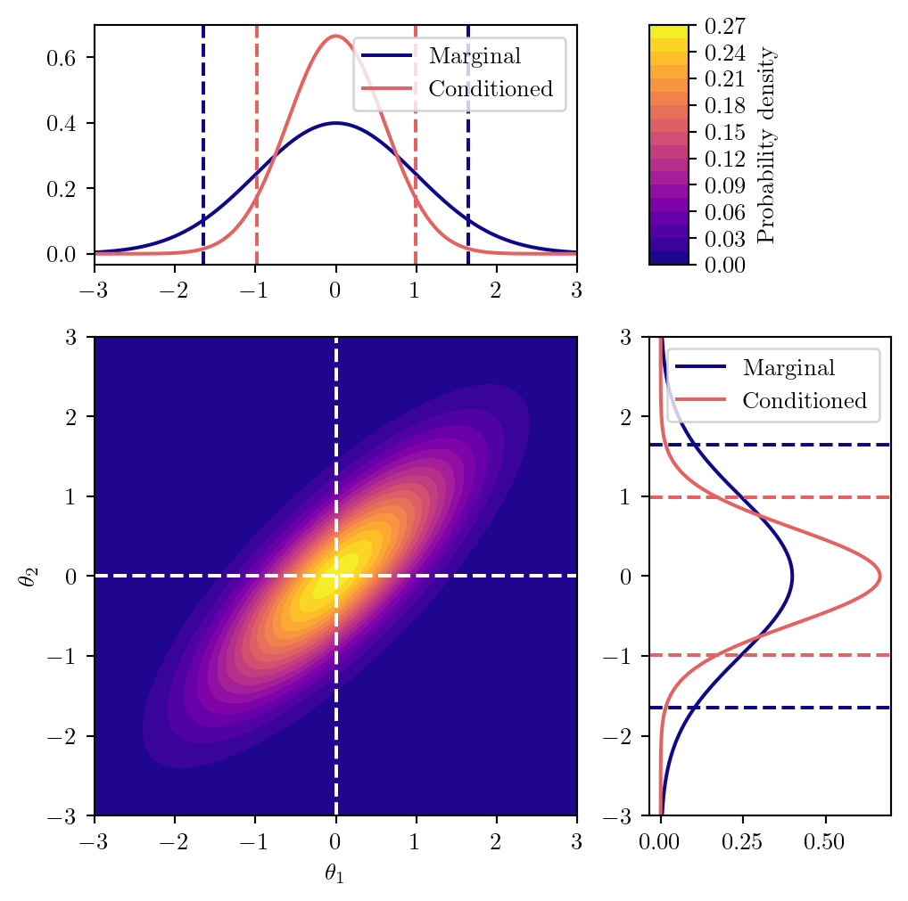
A set of \(N\) samples2 \(\left\{ \theta_i^{(k)} \right\}_{k}\) can be used to represent a high-dimensional posterior distribution. This is convenient, since marginal distributions are trivially obtained from these by only considering one of their entries, since \(\left\{ \theta_{i}^{(k)} \right\} \sim p(\theta_{i}|d)\).
2 We represent these samples with two indices: a lower one indicating the dimension in the parameter space, and an upper one in parenthesis indicating the number of the sample.
We can easily compute a number of summary statistics from samples, such as the expectation value of any function \(f(\theta)\) (Thrane & Talbot 2019):
\[ \langle f \rangle_{\theta \sim p(\theta | d, M)} \approx \frac{1}{N} \sum _{k=1}^N f(\theta^{(k)}) \,. \]
This general expression can be used for many different applications:
3 This expression is using the Iverson bracket (Knuth 1992) which returns 1 if the statement inside is true and 0 otherwise.
Working with samples also has disadvantages. For example, conditional distributions, which we are sometimes interested in, are difficult to obtain. Furthermore, in certain applications an estimate of the underlying density function is necessary. Techniques to obtain it exist, including Kernel Density Estimation and normalizing flows (Section 2.3.1), but they are not closed-form computations and often require tuning.
A common method to quantify the uncertainty in the estimate of a parameter is to compute some kind of Bayesian Credible Interval with a given confidence \(X\); in the gravitational wave literature, \(X=0.9\) is generally the choice.
There are different ways to define such an interval, depending on the problem at hand. If a parameter is bounded, and its posterior exhibits significant mass near the boundary, a single-sided interval is often given: \[ \text{``}\theta_{i} \leq y \text{ at $X$ confidence"} \iff \int_{\theta_{i}^{\text{min}}}^{y} p(\theta_{i}|d) \text{d}\theta_{i} = X \] \[ \text{``}\theta_{i} \geq y \text{ at $X$ confidence"} \iff \int_y^{\theta_{i}^{\text{max}}} p(\theta_{i}|d) \text{d}\theta_{i} = X\,. \]
If a parameter is not constrained near a boundary, a symmetric interval can be used: \[ \text{``}\theta_{i}\in[y_{1}, y_{2}] \text{ at $X$ confidence, symmetric''} \iff \int_{y_{1}}^{y_{2}} p(\theta_{i}|d) \text{d}\theta_{i} = X\,, \] with also \[ \int_{y_{2}}^{\theta_{i}^{\text{max}}} p(\theta_{i}|d) \text{d}\theta_{i} = \int_{\theta_{i}^{\text{min}}}^{y_{1}} p(\theta_{i}|d) \text{d}\theta_{i} = \frac{1-X}{2}\,. \] These intervals are commonly adopted due to the ease of their computation, which reduces to computing quantiles of the \(p(\theta_{i}|d)\) distribution, either at \(X\) or \(1-X\) (for the one-sided case) or at \((1-X) / 2\) and \((1+X) / 2\) (for the symmetric case).
Another method to quantify the uncertainty on one or more parameters is the Highest Probability Density (HPD) region. This is a region defined as \(R(X) = \left\{ \theta | p(\theta|d) \geq K(X) \right\}\), where the value of \(K\) is chosen such that
\[ \int_{R(X)} p(\theta|d) \text{d}\theta = X\,. \]
For a univariate and unimodal distribution, this is the shortest possible interval which contains a probability mass \(X\), and it can be computed quickly by sorting the samples, computing all possible interval widths and choosing the minimum.
However, this technique will fail with no warning if the posterior distribution is not unimodal, since then the HPD may consist of disjoint intervals. A computationally expensive, but more accurate way to estimate this region is:
The \(n\) bins obtained will represent the desired region.
Some algorithms, such as Nested Sampling (Section 2.2) or importance-sampled Neural Posterior Estimation (Section 2.3.3.3), can return a set of weighted samples. This means that each sample \(\theta_{i}\) is associated with a weight \(w_{i}\). Weighted samples can also arise in the context of reweighting: slightly perturbing the assumptions underlying an analysis and thus obtaining a set of weights in the form \[ w_{i} = \frac{\mathcal{L}_{1}(d|\theta_{i}) \pi_{1}(\theta_{i})}{\mathcal{L}_{2}(d|\theta_{i}) \pi_{2}(\theta_{i})}\,. \tag{2.2}\]
Here, it is assumed that the samples \(\theta_i\) were obtained through an analysis with model 2, so they are distributed according to the posterior distribution \(p_2(\theta_i)\).
The weights \(w_i\) could in principle also be defined as the ratio of the two normalized posteriors, multiplying them by a factor \(Z_2 / Z_1\). However, when reweighting we typically only have access to an estimate of the evidence \(Z_2\) from the previous analysis, while \(Z_1\) still to be determined. Defining the weights without this term, as in Equation 2.2, means that their average will provide this estimate (see also Section 2.3.3):
\[ \frac{1}{N} \sum_{i=1}^{N}w_{i} \approx \frac{Z_1}{Z_2}\,. \]
Summary statistics can then be computed through importance sampling, as \[ \langle f \rangle_{\theta \sim p(\theta | d, M)} \approx \frac{\sum _{i=1}^N w_{i} f(\theta _i)}{\sum_{i=1}^{N}w_{i}} \,. \tag{2.3}\] Based on this, all the quantities that could be obtained as described in Section 2.1.1 can be retrieved with weighted samples as well.
We can also extract equally-weighted samples from weighted ones by rejection sampling (see e.g. Ashton 2025 for a review):
On average, this procedure will retain \(n\langle w \rangle / \max w\) out of \(n\) samples; if many of the weights are lower than their maximum, it can become quite inefficient. In fact, under the realistic assumption of the weights being log-normally distributed, it can be shown that working with all weighted samples can be significantly more efficient than performing rejection sampling and then working with the resulting equally-weighted samples (Ashton 2025).
Mistrusting the results of our analysis pipelines is wise: we ought to put them through as many tests as possible in order to spot any issues. A common test for self-consistency is the \(p\)-\(p\) plot, which specifically regards the marginal distributions, \(p(\theta_i | d)\) for a fixed \(i\).
This test starts with a campaign of injections, for which the true value \(\hat{\theta_{i}}\) is known: every time, we need to generate a realistic simulation of the data \(d\) and analyze it, feigning ignorance of the true value. Then, we may compute the percentile of the distribution at which the true value lies: \[ u = \int_{-\infty}^{\hat{\theta}_{i}} p(\theta_{i}| d) \text{d}\theta = \text{CDF}_{p(\theta_{i}| d)}(\hat{\theta}_{i})\,. \tag{2.4}\] Here we assume for simplicity that the parameter can range over \(\mathbb{R}\), but the same calculation can be performed starting integration from the lower bound. This is the definition of the cumulative distribution function, computed at \(\hat{\theta}_{i}\). Repeating this procedure \(N_\text{inj}\) times, we will get a set of values \(u_{j}\), where the index \(j\) denotes the number of the injection. If our analysis is self-consistent, and \(p(\theta_{i}|d)\) is the probability density for the true value, then the \(u_{j}\) should be uniformly distributed in the interval \([0, 1]\).
There are a few ways to check whether this is the case, both visual and statistical. The simplest is probably to create a histogram of the \(u_{j}\) and visually check for uniformity. This is not a very powerful method, however, since it is hard to tell by eye which level of fluctuation is “acceptable”, and there is a dependence on the size of the bins used for the histogram. A better choice is to compute the empirical cumulative distribution function: \[ P_{\text{emp}}(u) = \frac{\text{number of }u_{j} \leq u}{N_\text{inj}} \]
This is a “stepwise”, locally constant function. For a perfectly uniform distribution, and an asymptotically high number of injections, it asymptotically tends toward \(P(u) = u\). It is uniquely defined, with no parameters.
A first visual test is to plot it and check that it approximately follows the diagonal. A useful variant of this is to plot \(u\) on the horizontal axis and \(P(u) - u\) on the vertical, which is expected to be near zero; see e.g. the work of Chatziioannou et al. (2019). This allows for the resolution of small fluctuations from the diagonal.
In order to help in the visual check, we need something to compare against: the magnitude of the expected fluctuations of \(P(u)\) under the null hypothesis, i.e. if the distribution is indeed uniform. If we fix a value of \(u\), this can be reframed as counting, out of \(N_\text{inj}\) independent and identically distributed draws from the distribution \(\mathcal{U}([0, 1])\), how many are smaller than \(u\). The probability for each of them being smaller than \(u\) is \(u\) itself, so the probability mass function describing this scenario will be binomial, but scaled by \(N_\text{inj}\): \[ p \left( P (u) = \frac{k}{N_\text{inj}} \right) = {k\choose N_\text{inj}} u^{k} (1-u)^{N _\text{inj}-k} \]
Therefore we can easily compute its mean and variance: \(\langle P(u) \rangle =u\) and \[ \langle (P(u) -u)^{2} \rangle = \frac{u(1-u)}{N_\text{inj}}\,. \]
from thesis_scripts import pp_plot
import numpy as np
from thesis_scripts import plt
rng = np.random.default_rng(seed=1)
u = rng.uniform(size=1000)
fig, ax = pp_plot.pp_plot(u, confidence_intervals=(.68, .95, .997))
plt.show()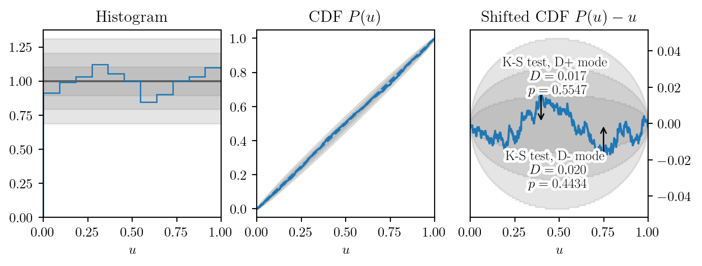
Along with the visual tests, we can perform a Kolmogorov-Smirnov test, which can give us a \(p\)-value computed under the null hypothesis of the distribution being uniform.
In Figure 2.2 we show these for the one-sided Kolmogorov-Smirnov (Kolmogorov 1933, Smirnov 1948) statistics \(D_{+}\) and \(D_-\), defined in terms of the empirical CDF as
\[ D_{\pm} = \sup_{u} \left[ \pm \left( P_{\text{emp}}(u) - u \right) \right]\,. \]
We will always have \(D_{\pm}\geq {0}\), since by definition \(P _\text{emp}(0)= 0\), meaning that the set of values we are taking the \(\text{sup}\) of includes 0. One may also use the two-sided statistic \[ D = \sup_{u} \lvert P_{\text{emp}}(u) - u \rvert\,. \]
We show both one-sided tests as opposed to the two-sided one, since their values can be used together to distinguish different types of misspecification, as we illustrate in Section 2.1.3. The density function of the K-S statistics under the null hypothesis is shown in Figure 2.3. The densities for the \(D_{\pm}\) functions are identical - the transformation \(u \to 1-u\) maps one to the other, and the null hypothesis is invariant under this reflection. The scenario \(D \approx 0\) is unlikely, as it would require the draws to precisely align themselves in an equally spaced pattern. On the other hand, \(D_{\pm}\) being close to zero is plausible, as it only requires the realization to mostly be above or below the uniform CDF.
import numpy as np
from thesis_scripts import plt
from scipy import stats
plt.figure(figsize=(6, 2.5))
D = np.linspace(0, 0.07, num=500)
n = 1000
plt.plot(D, stats.ksone.pdf(D, n=n), label=f'$D_{{\pm}}$ distribution for $n={{{n}}}$')
plt.plot(D, stats.kstwo.pdf(D, n=n), label=f'$D$ distribution for $n={{{n}}}$')
plt.legend()
plt.ylim(0, 65)
plt.xlabel('$D$ or $D_{\pm}$')
plt.ylabel('Probability density')
plt.show()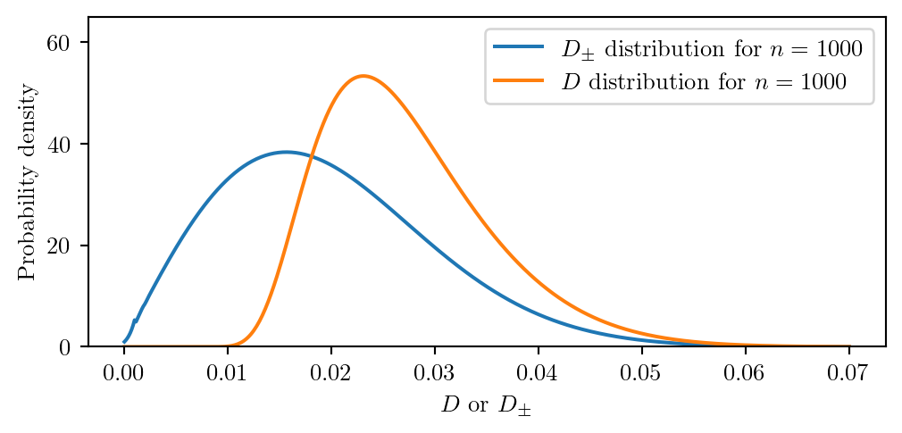
These tests are common in the literature: they were performed, for example, for the software BILBY (Romero-Shaw et al. 2020). More details on them can also be found in Romero-Shaw, Thrane & Lasky (2022). Within the sampler nessai (Williams, Veitch & Messenger 2021), a \(p\)-\(p\) plot test is applied to the insertion indices of new nested samples, i.e. the index of the new sample when ranking all previous live points by likelihood. As we shall discuss in Section 2.2, the new sample should be drawn uniformly in the likelihood-constrained prior mass. If this is the case, and the previous samples are also uniform in the variable \(X\) (which denotes prior mass), then this insertion index should be uniformly distributed between \(0\) and \(n _\text{live}\), which can be investigated with a \(p\)-\(p\) plot. Note that in that case, overconstraining of the distribution being sampled will not correspond to overconstraining in terms of insertion indices, but instead be equivalent to an underestimation bias, with more quantiles near the top-end of the distribution.4
4 Also note that the nessai diagnostic plots are set up to show a quantity defined with an opposite sign compared to this work, equivalent to the difference \(u - P(u)\).
Let us now explore the way that \(p\)-\(p\) plots look when the test fails. We will assume the true parameter \(\hat{\theta}\) is always equal to zero, the noise is Gaussian, and our prior on the parameter \(\theta\) is flat. This will allow us to explore how the \(p\)-\(p\) plot can help us diagnose errors in the estimated posterior distribution.
For all the cases considered, we simulate injections analytically as follows:
First, let us suppose we have a bias in our measurement, so that the posterior distribution is not centered at the measured value, \(\hat{\theta}+n = n\), but instead at a slightly higher one: we will use a small deviation, 0.2. Our posterior distribution will then read \[ p(\theta|d) = \mathcal{N}(\theta; \mu=n+0.2, \sigma=1)\,. \]
The result is in Figure 2.4.
from thesis_scripts import pp_plot
import numpy as np
from thesis_scripts import plt
from scipy import stats
rng = np.random.default_rng(seed=1)
u = stats.norm(loc=0.2+rng.normal(size=2000), scale=1).cdf(0)
fig, ax = pp_plot.pp_plot(u, confidence_intervals=(.68, .95, .997))
plt.show()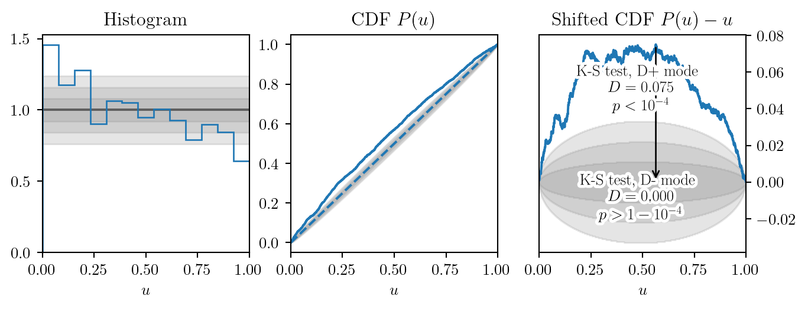
Figure 2.5 shows what happens if the bias is in the negative direction: \[ p(\theta|d) = \mathcal{N}(\theta; \mu=-0.2+n, \sigma=1)\,. \]
from thesis_scripts import pp_plot
import numpy as np
from thesis_scripts import plt
from scipy import stats
rng = np.random.default_rng(seed=1)
u = stats.norm(loc=-0.2+rng.normal(size=2000), scale=1).cdf(0)
fig, ax = pp_plot.pp_plot(u, confidence_intervals=(.68, .95, .997))
plt.show()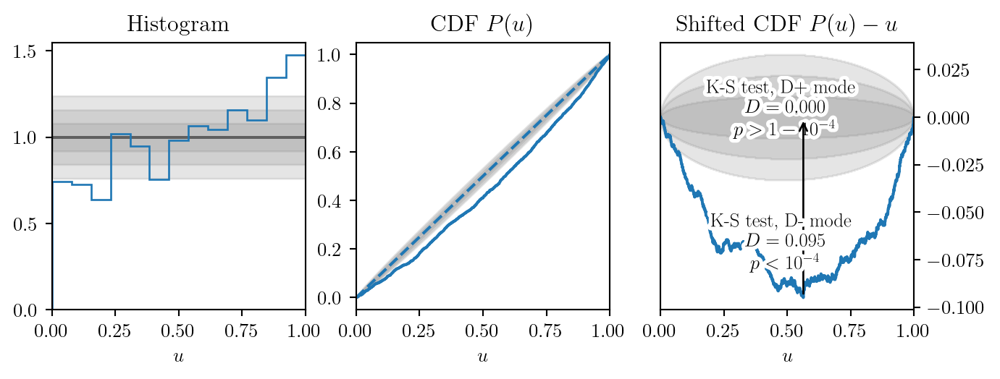
Note that only one of the one-sided KS tests gives extreme results in either case.
Now let us consider a different scenario: when the mean of the posterior distribution is correctly estimated, but its variance is not. If the variance is too high, we are underconstraining the parameter, assigning a higher uncertainty to our measurement than is warranted: for example, if \[ p(\theta|d) = \mathcal{N}(\mu=n, \sigma=1.2)\,. \]
from thesis_scripts import pp_plot
import numpy as np
from thesis_scripts import plt
from scipy import stats
rng = np.random.default_rng(seed=1)
u = stats.norm(loc=rng.normal(size=2500), scale=1.2).cdf(0)
fig, ax = pp_plot.pp_plot(u, confidence_intervals=(.68, .95, .997))
plt.show()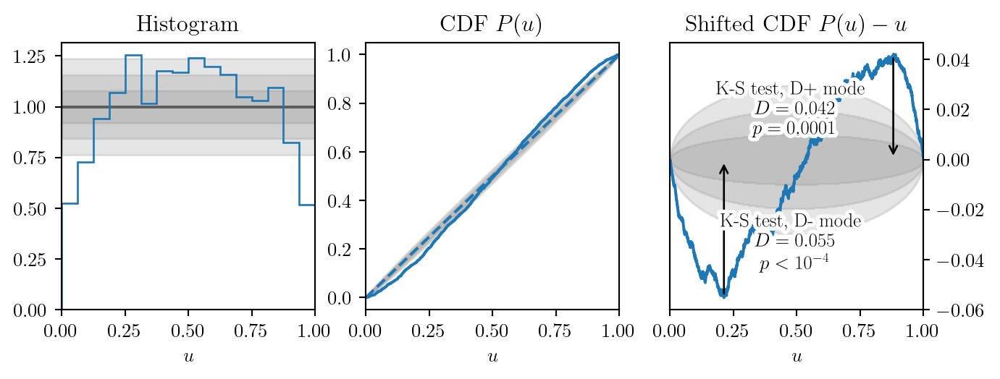
Figure 2.6 shows the result. In the opposite scenario, we are overconstraining (Figure 2.7), assigning a lower uncertainty to our measurement than is warranted: for example, \[ p(\theta|d) = \mathcal{N}(\mu=n, \sigma=0.8)\,. \]
from thesis_scripts import pp_plot
import numpy as np
from thesis_scripts import plt
from scipy import stats
rng = np.random.default_rng(seed=1)
u = stats.norm(loc=rng.normal(size=2500), scale=0.8).cdf(0)
fig, ax = pp_plot.pp_plot(u, confidence_intervals=(.68, .95, .997))
plt.show()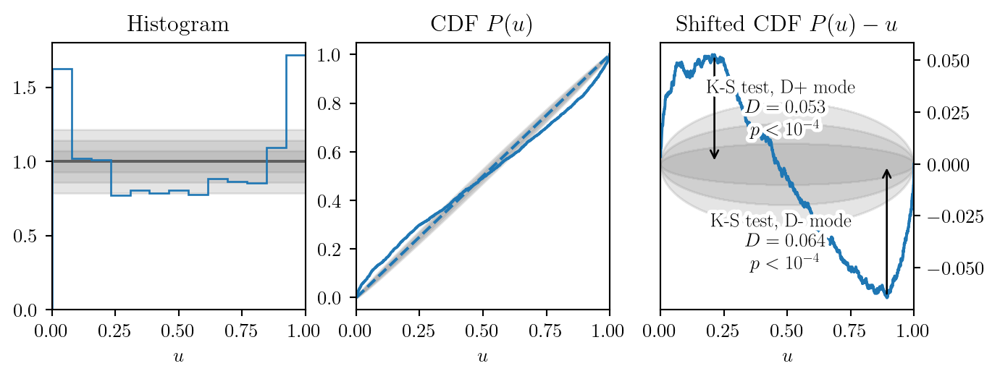
Finally, let us consider a distribution with the correct mean and variance, but the wrong shape. To this end we choose a generalized normal distribution, with a shape parameter \(\beta = 2.5\). The \(\beta = 2\) case recovers the standard normal distribution.
import numpy as np
from thesis_scripts import plt
from scipy import stats
beta = 2.5
var = stats.gennorm.stats(beta, moments='v')
plt.figure(figsize=(6, 2.5))
dist = stats.gennorm(beta=beta, loc=0, scale=1/np.sqrt(var))
vals = np.linspace(-4., 6., num=1000)
plt.plot(vals, stats.norm(loc=0, scale=1).pdf(vals), label='Standard normal')
plt.plot(vals, dist.pdf(vals), label=f'Generalized normal with $\\beta={beta}$')
plt.ylim(0,0.5)
plt.xlim(vals[0], vals[-1])
plt.legend()
plt.xlabel('$\\theta$')
plt.ylabel('$p(\\theta)$')
plt.show()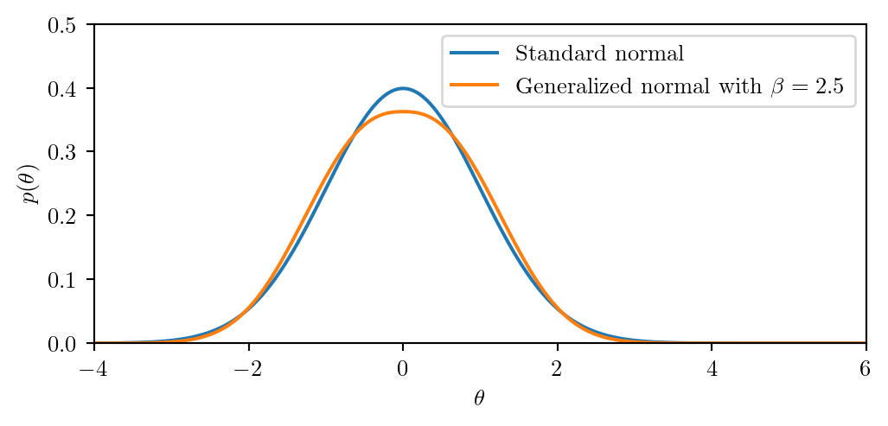
We rescale the distribution so that it has unit variance, as shown in figure Figure 2.8. As this shift is harder to detect than the ones before, we need to raise the statistics.
from thesis_scripts import pp_plot
import numpy as np
from thesis_scripts import plt
from scipy import stats
rng = np.random.default_rng(seed=1)
dist = stats.gennorm(beta=beta, loc=rng.normal(size=10000), scale=1/np.sqrt(var))
u = dist.cdf(0)
fig, ax = pp_plot.pp_plot(u, confidence_intervals=(.68, .95, .997))
plt.show()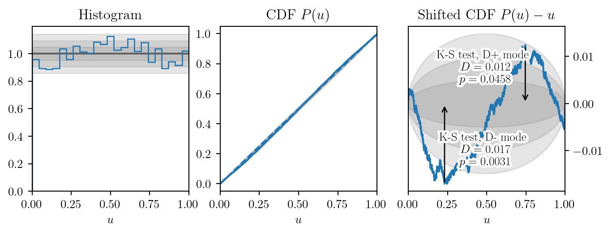
The distribution looks similar to the underconstrained case, as for the bulk of the probability mass (-2 to +2 in Figure 2.8) the difference between these distribution is analogous to underconstraining. However, close to the edges in Figure 2.9 we can see the trend reverse.
The evidence \(\mathcal{Z}\) is helpful when comparing models. In a realistic scenario, our model \(M\) may not adequately capture the behavior of the system at hand, but in Equation 2.1, all the terms are conditional on it: an analysis performed under the assumption that the model is true cannot inform us on its validity, by construction. If more than one model is available, we can make some steps toward addressing this problem by comparing them; still, we should remember that our results are dependent on the set of models we used, and it is possible they may all miss some important aspect.
We can write an anologous expression to Equation 2.1 for both models \(M_{1}\) and \(M_{2}\): \[ p(M_{i}|d) Z(d) = \mathcal{Z}(d| M_{i}) \pi(M_{i}); \] dividing one by the other, we get the following:5 \[ \frac{p(M_{1} | d)}{p(M_{2}|d)} = \frac{\mathcal{Z}(d|M_{1})}{\mathcal{Z}(d|M_{2})} \frac{\pi(M_{1})}{\pi(M_{2})}. \tag{2.5}\]
5 While both are probability distributions over the possible data realizations, we denote with \(\mathcal{Z}\) the conditional evidence under the assumption of model \(M_i\), while \(Z\) is the marginal probability of the data without the assumption of this model. One might interpret it as the likelihood of the data under the common assumptions shared by all models \(M_i\), e.g. regarding the noise-generating process, which all our results are implicitly conditioned over. This is anyway immaterial, since the \(Z(d)\) term cancels in the equation.
The left-hand term in Equation 2.5 is dubbed posterior odds: it describes the degree to which we should prefer model \(1\) over model \(2\) after seeing the data \(d\). On the right hand we have a product of two terms: the Bayes Factor (BF) \[ \text{BF}_{2}^{1} = \frac{\mathcal{Z}(d|M_{1})}{\mathcal{Z}(d|M_{2})} \tag{2.6}\] describes the degree to which the data prefer model \(1\) over model 2. The remaining term, \(\pi(M_{1}) / \pi(M_{2})\), is called prior odds, and it describes the degree to which we preferred model 1 over model 2 before seeing the data \(d\). This may be informed, for example, by previous observations, theoretical considerations, or simply be set to 1 if our belief is that both models are equally likely.
Equation 2.6 can be applied several times in a row, as more observations become available; the Bayes Factors from each observation multiply.
This has an interesting consequence if the two models at hand are complementary, i.e. one being correct excludes the other, and one or the other must be correct, so that their probabilities satisfy \(p(M_{1})+p(M_{2})=1\). If this is the case, we may simplify the notation by simply using \(P(M_{1})\) and \(1-p(M_{1})=p(M_{2})\). Then, taking the logarithm of Equation 2.6, we can express it as \[ \text{logit}(p(M_{1}|d)) = \log \text{BF}_{2}^{1} + \text{logit}(p(M_{1}))\,, \] where we defined the \(\text{logit}\) function, also shown in figure Figure 2.10: \[ \text{logit}(p) = \log \frac{p}{1-p}\,. \]
from thesis_scripts import *
import numpy as np
from thesis_scripts import plt
plt.figure(figsize=(6, 2.5))
p = np.linspace(5e-3, 1-5e-3, num=500)
plt.xlabel('$\\mathrm{{logit}}(p)$')
plt.ylim(0, 1)
plt.plot(np.log(p / (1-p)), p)
plt.xlabel('$\\mathrm{{logit}}(p)$')
plt.ylabel('$p$')
plt.grid()
plt.show()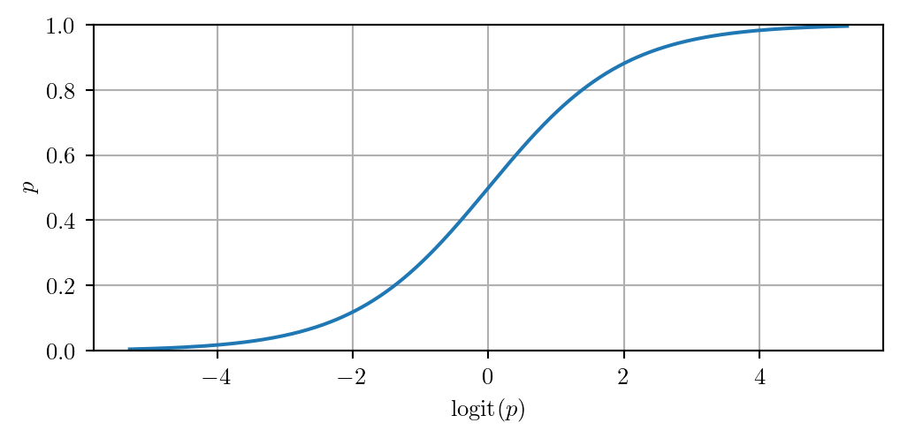
The logit of a probability, \(\text{logit}(p) \in \mathbb{R}\), also called log-odds, can be argued to be a more natural way to express it than \(p\in (0, 1)\). Probabilities very close to 0 or 1 are extreme statements: in this parameterization, they are accordingly very far from the origin, and absolutes such as \(p=0, 1\) are divergent towards \(\pm \infty\).
Based on this formalism, we may be tempted to multiply Bayes Factors from different observations of the same phenomenon. While this is correct in an idealized scenario, it can lead to dramatically incorrect conclusions when applied in practice, due to its dependence on the prior used in each analysis; Isi, Farr & Chatziioannou (2022) have discussed this in the context of tests of General Relativity (GR).
If two models are nested, i.e. one is a special case of the other, then we can express the Bayes Factor between them in a simple way (Cameron 2013, Dickey 1971): \[ \text{BF}_{1}^{2} = \frac{p_{2}(\theta=\theta_{0}|d)}{\pi_{2}(\theta=\theta_{0})}\,. \tag{2.7}\] Here, model 1 is the special case of model 2 in which parameter \(\theta\) equals \(\theta_{0}\), \(p_{2}\) is the marginal posterior distribution for the parameter \(\theta\) under model 2, while \(\pi_{2}\) is the marginal prior distribution for the parameter \(\theta\) under model 2.
The value of \(\pi_2\) computed at any given point is sensitive to how wide the prior is, since it must be a normalized probability distribution. For example, the density of a uniform prior over an interval of width \(A\) is precisely \(1/A\).
This formulation illustrates the general fact that Bayes Factors are heavily dependent on the width of the prior distribution. This is a well-known feature of Bayesian inference, known as the Occam Factor or Penalty. Among two models which fit the data equally well (i.e. the maximum values of their likelihoods are equal), the preferred one is the one for which the likelihood has high values for a larger fraction of the prior space. Qualitatively, this penalizes flexible models, which are able to fit many different scenarios beside the observed one, in favor of ones which only fit the observed scenario and few others.
A negative consequence of this arises if the prior distributions cannot be selected in a principled way, though: if they are set too wide, the data may seem to favor the baseline model (i.e. model 1 in equation Equation 2.7) even in the presence of a deviation (model 2 in the same equation with \(\theta \neq \theta_0\)). By the way Bayes Factors are constructed, if the BF for any single observation favors the baseline model, combining many of them from different observations only accumulates evidence against a deviation, even if a small deviation is present and could be detected by a simultaneous analysis of all events.
Nested sampling, introduced by Skilling in the early 2000s (Skilling (2004), Skilling (2006)), is an algorithm designed to compute the evidence \(\mathcal{Z}\) as well as the posterior distribution on the parameters.
The evidence is computed through the integral
\[ \mathcal{Z}(d|M) = \int \mathcal{L}(d | \theta, M) \pi (\theta | M) \text{d}^n\theta \,. \]
This integral is in \(n\) dimensions (where \(n\) is the dimensionality of the parameter space) and therefore difficult to work with. The idea in nested sampling is to rewrite it in terms of the auxiliary variable \(X\), defined as the prior volume contained within a likelihood constraint \(\mathcal{L} \geq L\):
\[ X (L) = \int_{\mathcal{L}(d | \theta, M) \geq L} \pi (\theta | M) \text{d}^n\theta\,. \]
Since the prior is a normalized probability distribution and the likelihood ranges from 0 to \(L _{\text{max}}\), this variable will range from \(X(0) = 1\) to \(X(L _{\text{max}}) = 0\), and it will always be decreasing.6 We can define its inverse, \(L(X)\), and rewrite the likelihood integral through integration by parts: the evidence is the expectation value of the likelihood, therefore, starting from the definition of a Lebesgue integral: \[ \mathcal{Z}(d|M) = \int_{0}^{L_\text{max}} X(L) \text{d}L = X L |_{L=0}^{L=L_\text{max}} - \int_{X(L=0)}^{X(L=L_\text{max})} L(X)\text{d}X = \int_{0}^{1}L(X)\text{d}X\,. \tag{2.8}\]
6 It will not necessarily be strictly decreasing, but that is not a conceptual issue. One can introduce jitter in the likelihood, varying it at each point by an inconsequential amount, in order to ensure that the decreasing condition is verified precisely.
For a detailed discussion of the mathematical details, also see Ashton et al. (2022), Sivia & Skilling (2006).
Note that, by definition, \(X\) is directly related to probability mass: the prior probability of an interval \([X_{0}, X_{1}]\), i.e. the prior mass which has likelihood values \(L(X_{1}) < \mathcal{L} < L(X_{0})\), is
\[ p([X_{0}, X_{1}]) = \int _{L(X_{0}) < \mathcal{L}(d|\theta, M) < L(X_{1})} \pi (\theta | M) \text{d}^{n} \theta = X_{1} - X_{0}\,, \]
where we computed the integral on a likelihood “ring” by subtracting the inside volume from the outside one. This is useful to us, since it means that if we distribute points according to the prior their \(X\) values will also be uniformly distributed in \([0, 1]\). More formally, the probability we are assigning to \(X\) is the push-forward probability measure associated to the mapping from \(\theta\) to \(X\) defined by \(X(\theta) = X(L(\theta))\). For a discussion on this, see (Ashton et al. 2022, box 2).
If \(k\) points are uniformly distributed in an interval \([0, X^*]\), then the largest of them will have a \(X\) coordinate distributed as \(X _\text{max} / X^* \equiv t \sim \text{beta}(k, 1) = k t^{k-1}\), where we defined the compression ratio \(t\): when we discard the lowest-likelihood point with \(X _\text{max}\), we will have contracted the prior volume by a factor \(t\).
Here is a simple argument for why \(t\), the largest out of \(k\) uniform random variates in \([0, 1]\), is distributed according to \(t \sim k t^{k-1}\). The statement can equivalently be framed in terms of the cumulative distribution: \(p(t \leq T) = T^{k}\).
We can think of our \(k\) random variates as a point in the \(k\)-dimensional unit box \([0, 1]^{k}\), and since they are uniformly distributed there will be a one-to-one correspondence between volume within the box and probability mass. Then, the geometric meaning of the cumulative distribution is the volume of the region corresponding to the event \(t \leq T\), i.e. such that the maximum of the coordinates of our point is \(T\). The answer is the box \([0, T]^{k}\), whose volume is \(T^{k}\), thus proving our claim.
In general, the \(n\)-th smallest out of \(k\) uniform random variates in \([0, 1]\) is distributed according to a beta distribution, specifically \(\text{beta}(k, n-k+1) \propto x^{n-1}(1-x)^{k-n}\); here we are looking at the \(k\)-th smallest (i.e. the largest).
In terms of \(\log t\), the distribution reads \[ \frac{\text{d}p}{\text{d}\log t} = t\frac{\text{d}p}{\text{d}t} = k t^{k} = k e^{k \log t} \]
This distribution is shown in Figure 2.11.
from matplotlib.ticker import FixedLocator, FixedFormatter
import numpy as np
from thesis_scripts import plt
plt.figure(figsize=(6, 2.5))
n = 1
log_t = np.linspace(-3/n, 0)
p_of_log_t = n * np.exp( n * log_t)
plt.plot(log_t, p_of_log_t / n)
_ = plt.xlabel('$\log t$')
_ = plt.ylabel(r'$\mathrm{d}p / \mathrm{d} \log t$')
plt.xlim(-3/n, 0)
plt.ylim(0, n)
plt.gca().xaxis.set_major_locator(FixedLocator([-3/n, -2/n, -1/n, 0]))
plt.gca().xaxis.set_major_formatter(FixedFormatter([
'$-3/n$',
'$-2/n$',
'$-1/n$',
'$0$'
]))
plt.gca().yaxis.set_major_locator(FixedLocator([0, n/4, n/2, 3*n/4, n]))
plt.gca().yaxis.set_major_formatter(FixedFormatter([
'$0$',
'$n/4$',
'$n/2$',
'$3n/4$',
'$n$'
]))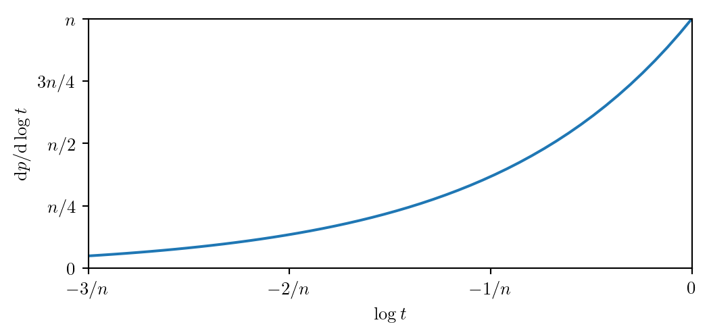
Its mean and standard deviation are: \[ \begin{aligned} \langle \log t \rangle &= \int_{-\infty}^{0} \log t \frac{\text{d}p}{\text{d}\log t} \text{d}\log t \\ &= \int_{-\infty}^{0} \frac{x}{k} k e^{x} \frac{ \text{d}x}{k} \\ &= \frac{1}{k} \int_{-\infty}^{0} x e^{x} \text{d}x \\ &= - \frac{1}{k} \end{aligned} \]
where \(x = k \log t\), and \[ \begin{aligned} \left\langle (\log t)^{2} \right\rangle - \frac{1}{k^{2}} &= \int_{-\infty}^{0} (\log t)^{2} \frac{\text{d}p}{\text{d}\log t} \text{d} \log t - \frac{1}{k^{2}} \\ &= \int_{-\infty}^{0} \frac{x^{2}}{k^{2}} k e^{x} \frac{\text{d}x}{k} - \frac{1}{k^{2}} \\ &= \frac{1}{k^{2}} \int_{-\infty}^{0} x^{2} e^{x} \text{d}x - \frac{1}{k^{2}} \\ &= \frac{2-1}{k^{2}} = \frac{1}{k^{2}}\,. \end{aligned} \]
Compactly, we can then write \(\log t = (-1 \pm 1) / k\).
If we sample \(k\) points from the prior (with total volume \(X_{0}\)) and remove the one with the worst likelihood, the remaining prior volume will be \(X_{1} = t_{1}X_{0}\), where \(\log t_{1}\) has an expectation value of \(-1 /k\). This will be true at every iteration, so (Skilling 2006) \[ \log X_{i} = \sum_{j\leq i} \log t_{j} \approx -\frac{i}{k} \pm \frac{\sqrt{ i }}{k}\,. \]
The prior is compressed exponentially, which is desirable since the typical set for the posterior is often several orders of magnitude smaller than the prior. For a visualization of this compression see Figure 2.12.
import numpy as np
from thesis_scripts import plt
rng = np.random.default_rng(seed=1)
n_iterations = 80
logX_min = -4
n_live_numbers = [100, 25]
colors = ['#648FFF', '#FE6100']
plt.figure(figsize=(6, 3.))
for n_live, color in zip(n_live_numbers, colors):
results = [[] for _ in range(n_iterations)]
for i in range(n_iterations):
points = rng.uniform(size=n_live)
points = np.sort(points)
logX = 0
while logX > logX_min:
results[i].append(logX)
logX = np.log(points[-1])
points[-1] = rng.uniform(0, np.exp(logX))
points = np.sort(points)
results[i].extend(np.log(points[::-1]))
min_i = min(len(arr) for arr in results)
max_length = 0
for i in range(n_iterations):
if i == 0:
label = '$n_{\mathrm{live}} =$' + f' {n_live}'
else:
label = None
plt.plot(
results[i],
np.arange(len(results[i])),
c=color,
alpha=.1,
label=label)
if max_length < len(results[i]):
max_length = len(results[i])
res_array = np.zeros((max_length, n_iterations))
for i in range(n_iterations):
res_array[:len(results[i]), i] = results[i]
expected_it = int(-logX_min * n_live)
std = np.std(res_array[expected_it])
plt.errorbar(
[logX_min], [expected_it], xerr=std,
fmt='.k',
lw=1,
capsize=5,
c='black',
)
legend = plt.legend()
for handle in legend.legend_handles:
handle.set_alpha(1.)
plt.axvline(logX_min, ls='--', c='black', lw=1)
plt.xlim(0, logX_min-6)
plt.xlabel(r'$\log X$: prior compression')
plt.ylabel('Iteration number')
plt.show()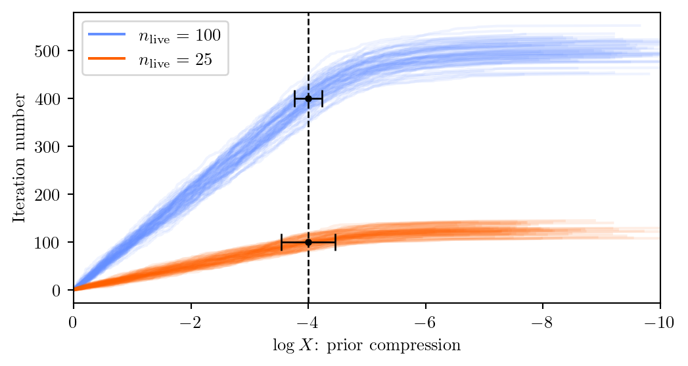
This allows us to construct a procedure to evaluate the integral in Equation 2.8, as long as we are able to do the following:
The points which still lie above the likelihood threshold at any given iteration are called live points. Since every time one is discarded we promptly replace it, their total number \(k\) (also often written as \(n _{\text{live}}\)) is conserved. We are constructing a sequence of discarded (“dead”) points \(\theta_{i}\) with corresponding likelihoods \(L_{i}\) and approximate associated interior prior volumes \(X_{i} \approx e^{-i/k}\).
At this stage, we still need to discuss how step 3 is performed, as well as when the iteration should stop — for now, suppose that happens at some stage \(n_\text{iter}\).
For the evidence, we can simply use a trapezoidal integration rule: \[ \mathcal{Z}(d|M) \approx \sum_{i=1}^{n_\text{iter}} w_{i} L_{i} = \sum_{i=1}^{n_\text{iter}} \frac{X_{i+1} - X_{i-1}}{2} L_{i} \]
It can be shown that this sum converges to the correct value in the \(n_\text{iter} \to \infty\) and \(n _\text{live} \to \infty\) limit.
These weights can also be used to estimate the posterior as follows: take the points \(\theta_{i}\) and assign to each of them a weight \[ p_{i} = \frac{w_{i} L_{i}}{Z}\,. \tag{2.9}\]
These weighted samples (see Section 2.1.1.2) represent the posterior. It is readily seen that these weights add to 1, and heuristically they are computed as one might expect, by multiplying the prior mass and likelihood value for each of the regions we have subdivided the prior volume into.
Nested sampling is, in a way, a meta-algorithm: the sub-algorithm used to sample a new point from the prior subject to the constraint that its likelihood be higher than the last rejected point is a crucial determinant of the computational complexity and behavior of the implementation. This problem is called Likelihood-Restricted Prior Sampling.
A review of several possible options can be found in (Buchner 2021) or (Ashton et al. 2022, table 2). Roughly speaking, they can be classified into:
While the current set of live points is often used as a guide, the statistical properties of nested sampling hold as long as the new point is uncorrelated from the previous ones.
The way most nested sampling software implements likelihood-restricted prior sampling starts from the assumption that the prior is uniform in the box \([0, 1]^{d}\).
We can, however, use arbitrary non-uniform priors: for any given prior \(\pi(\theta)\) we want to use, we need to find a mapping \(g\colon [0, 1]^{d} \to \mathbb{R}^{d}\) between the unit \(d\)-dimensional box and our physical prior space, such that if \(u \sim \mathcal{U}([0, 1]^{d})\), then \(g(u) \sim \pi\), i.e. mapping uniformly-distributed random numbers onto values distributed according to our prior.
If our prior is separable, i.e. \(\pi (\theta) = \prod_{i=1}^{d} \pi_{i}(\theta_{i})\), then the problem is solvable analytically: the prior transform map will be such that \[ g(u) = [\text{CDF}^{-1}_{\pi_{i}}(u_{i})]_{i} \] where “CDF” denotes the cumulative distribution of \(\pi_{i}\): \[ \text{CDF}_{\pi_{i}} (\theta_{i}) = \int_{-\infty}^{\theta_{i}} \pi_{i}(y) \text{d}y \in [0,1] \] and \(\text{CDF}^{-1}\) is its inverse. The cumulative distribution can also be computed from samples, so in the case of separate priors we need not have an analytical expression for them.
In the non-separable case, while it may be mathematically possible to define the transform \(g\) corresponding to the distribution \(\pi\), there is no general procedure to obtain it; equivalently, there is no algorithm to “analytically” sample from an arbitrary distribution \(\pi\).
It is still possible to work with non-separable priors: for example, one could model it with a normalizing flow (Section 2.3.1), or if its density function is known one could perform the analysis with an approximate analytic prior and then reweight the samples as described in Section 2.1.1.2. These approaches are, however, subject to potential pitfalls (failed convergence, low sample efficiency, dependence on hyperparameters), and their performance needs to be studied on a case-by-case basis.
In order to illustrate the process of model comparison, let us define a simple problem: suppose we have a set of data points \((x_{i}, y_{i})\) with constant, known and Gaussian uncertainties \(\sigma_{y}\) on the \(y\) values.
We will compare two simple nested models, namely a parabolic one with \(y = f(x; a, b, c) = a x^{2}+bx+c\) and a linear one with \(y = f(x; b, c) = bx+c\). Model comparison can also be performed for non-nested models, but the nested case has some nice properties we will showcase later.
Figure 2.13 shows the set of data we will use, which comes from the parabolic model.
import numpy as np
from thesis_scripts import plt
from thesis_scripts import data_path
kwargs = {
'fmt': 'o',
'capsize': 5,
'alpha': .8,
}
rng = np.random.default_rng(seed=1)
n_points = 20
x_i = np.linspace(-5, 5, num=n_points)
sigma_y = 1
true_a = -0.1
true_b = 0.5
true_c = 3
def model(x, a, b, c):
return a*x**2 + b*x + c
y_i = model(x_i, true_a, true_b, true_c) + rng.normal(scale=sigma_y, size=n_points)
_ = plt.errorbar(x_i, y_i, sigma_y, **kwargs)
_ = plt.xlabel('$x$')
_ = plt.ylabel('$y$')
np.save(data_path / 'cache' / 'parabolic_data_x.npy', x_i)
np.save(data_path / 'cache' / 'parabolic_data_y.npy', y_i)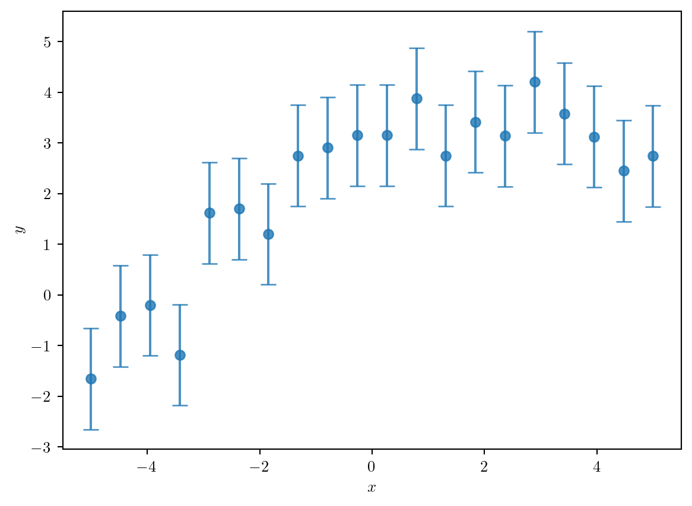
We can then analyze this data, using a Gaussian likelihood and setting (somewhat arbitrarily) uniform priors for the parameters \(a\), \(b\) and \(c\) in the range \([-10, 10]\):
The log-likelihood will be \[ \log \mathcal{L}(\text{data} | \theta, \text{model}) = - \frac{1}{2} \sum_{i=1}^{n} \frac{(y_{i} - f(x_{i}; \theta))^{2}}{\sigma_{y}^{2}} - \frac{n}{2} \log (2 \pi \sigma_{y}^{2}). \]
from dynesty import DynamicNestedSampler
lnorm = -0.5 * (
np.log(2 * np.pi) * n_points +
np.log(sigma_y**2 * n_points))
def loglike(theta):
y = model(x_i, *theta)
return - 0.5 * ((y-y_i)**2).sum() / sigma_y**2 + lnorm
def loglike_linear(theta):
y = model(x_i, 0, *theta)
return - 0.5 * ((y-y_i)**2).sum() / sigma_y**2 + lnorm
def prior_transform(u):
# flat prior in [-10, 10] for all parameters
return u*20. - 10.
fname = data_path / 'cache' / 'parabolic_model.pkl'
if fname.exists():
sampler_parabola = DynamicNestedSampler.restore(str(fname))
else:
sampler_parabola = DynamicNestedSampler(loglike, prior_transform, 3, nlive=500)
sampler_parabola.run_nested(dlogz_init=0.01)
sampler_parabola.save(str(fname))fname = data_path / 'cache' / 'linear_model.pkl'
if fname.exists():
sampler_linear = DynamicNestedSampler.restore(str(fname))
else:
sampler_linear = DynamicNestedSampler(loglike_linear, prior_transform, 2, nlive=500)
sampler_linear.run_nested(dlogz_init=0.01)
sampler_linear.save(str(fname))We perform Bayesian inference for the two models with Nested Sampling (Section 2.2). It gives us estimates for the posterior distributions of the parameters as well as the evidences. This allows us to compute a Bayes Factor: \[ \log \text{BF}^{\text{parabola}}_\text{line} = \log Z_\text{parabola} - \log Z_\text{line}\,, \]
which appears in the equation for the posterior odds for one model against the other: \[ \underbrace{ \frac{p(M_\text{parabola} | d)}{P(M_\text{line}| d)} }_{ \text{posterior odds} } = \text{BF}^{\text{parabola}}_{\text{line}} \underbrace{ \frac{p(M_{\text{parabola}})}{p(M_{\text{line}})} }_{ \text{prior odds} }\,. \]
from IPython.display import Markdown
bayes_factor = sampler_parabola.results.logz[-1] - sampler_linear.results.logz[-1]
bf_error = np.sqrt(
sampler_parabola.results.logzerr[-1]**2 +
sampler_linear.results.logzerr[-1]**2
)
Markdown(
'In this case, the curvature of the data is strong enough for the Bayes Factor to favor the parabolic model (although not by much): '
f'the log Bayes factor is ${bayes_factor:.2f}\pm$ {bf_error:.2f} nats in favor of the parabolic model.')In this case, the curvature of the data is strong enough for the Bayes Factor to favor the parabolic model (although not by much): the log Bayes factor is \(2.12\pm\) 0.11 nats in favor of the parabolic model.
Since the models we are considering were nested, we have a comparison point for our Bayes Factor: the Savage-Dickey density ratio; see Equation 2.7.
The linear model is indeed a special case of the parabolic one (with \(a=0\)); the priors for the other parameters are exactly the same in both cases. Then: \[ \text{BF}^{\text{parabola}}_\text{line} = \frac{p(a=0 | d, M_\text{parabola})}{\pi(a=0|M_\text{parabola})}\,. \]
One might then think that, at least in this type of scenario, going through the evidence computation with a powerful tool such as Nested Sampling was unnecessary: the posterior distribution can be computed for cheaper, after all. However, as we show in Figure 2.14, computing the value for the posterior density distribution at the point \(a=0\) is not easy.
We can approximate the posterior density based on the samples with tools like a histogram or a kernel density estimate, but any such method will suffer from low statistics if we need to explore the edges of the distribution, as we see here: we would need an enormous amount of posterior samples to reach the same accuracy on the ratio of the distributions we get with Nested Sampling.
from scipy.stats import gaussian_kde
a_samples = sampler_parabola.results.samples[:, 0]
a_weights = sampler_parabola.results.importance_weights()
a_range = [-0.25, 0.05]
cmap = plt.get_cmap('coolwarm')
a_values = np.linspace(*a_range, num=50)
values, edges = np.histogram(a_samples, bins=a_values, density=True, weights=a_weights)
kde = gaussian_kde(a_samples, weights=a_weights)
plt.stairs(values, edges, alpha=.5, color=cmap(1.))
plt.plot(a_values, kde(a_values), alpha=.9, color=cmap(1.))
_ = plt.axhline(1/20, alpha=.9, color=cmap(0.))
_ = plt.axvline(true_a, ls='--', lw=1, c='black')
_ = plt.yscale('log')
_ = plt.xlim(*a_range)
_ = plt.ylim(1e-3, 5e1)
posterior_at_0 = 1/20 * np.exp(-bayes_factor)
_ = plt.errorbar(0, posterior_at_0, posterior_at_0* bf_error, **kwargs, color='black')
_ = plt.arrow(0, 1/20, 0, 1/20*(np.exp(-bayes_factor)-1), length_includes_head=True, color=cmap(0.), alpha=.5, width=0.003)
_ = plt.xlabel('$a$')
_ = plt.ylabel('Marginal posterior and prior densities $[\mathrm{d}p / \mathrm{d} a]$')
ax = plt.gca()
x1, x2, y1, y2 = -0.01, 0.01, posterior_at_0*0.7, posterior_at_0*1.3 # subregion of the original image
axins = ax.inset_axes(
[0.6, 0.6, 0.37, 0.37],
xlim=(x1, x2), ylim=(y1, y2), xticklabels=[], yticklabels=[])
axins.arrow(0, 1/20, 0, 1/20*(np.exp(-bayes_factor)-1), length_includes_head=True, color=cmap(0.), alpha=.5, width=0.03)
axins.errorbar(0, posterior_at_0, posterior_at_0* bf_error, **kwargs, color='black')
axins.stairs(values, edges, alpha=.5, color=cmap(1.))
ax.indicate_inset_zoom(axins, edgecolor="black")
_ = axins.plot(a_values, kde(a_values), alpha=.5, color=cmap(1.))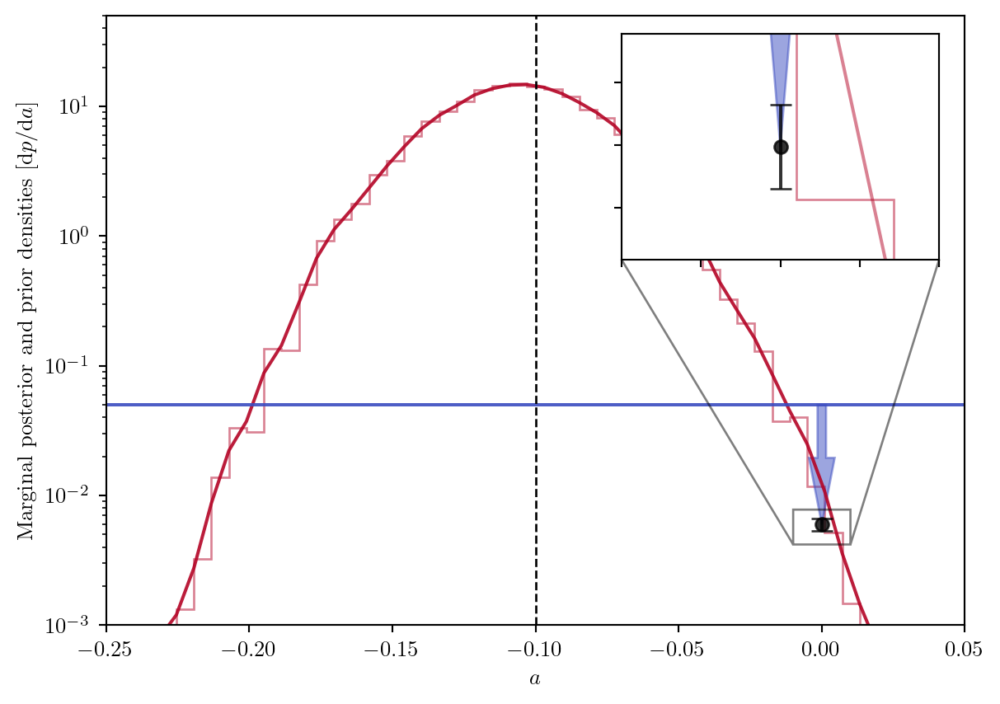
The quantities we discussed can be tracked through a Nested Sampling run as a useful diagnostic. Here we show some commonly used plots, based on a two-dimensional example where the likelihood is Gaussian in the parameters. The assumptions are as follows:
We use 400 live points, and stop iterating when the contribution to the integral from a single iteration reaches \(\Delta \log Z_{i} < 0.01\). We use the dynesty sampler (Speagle 2020).
import numpy as np
from dynesty import NestedSampler
from thesis_scripts import data_path
# from the Dynesty quickstart:
# https://dynesty.readthedocs.io/en/latest/quickstart.html
ndim = 2
# Define our 3-D correlated multivariate normal log-likelihood.
std = 3e-2
mu = 0.5 * np.ones(ndim)
C = np.identity(ndim) * std**2
C[C==0] = 0.95 * std**2
Cinv = np.linalg.inv(C)
lnorm = -0.5 * (np.log(2 * np.pi) * ndim +
np.log(np.linalg.det(C)))
def loglike(x):
return -0.5 * np.dot(x-mu, np.dot(Cinv, x-mu)) + lnorm
def ptform(u):
return u
fname = data_path / 'cache' / 'plotting_example_sampler.pkl'
if fname.exists():
sampler = NestedSampler.restore(str(fname))
else:
sampler = NestedSampler(loglike, ptform, ndim, nlive=400)
sampler.run_nested(dlogz=0.01)
sampler.save(str(fname))The first diagnostic tool is the run plot (Figure 2.15), where we see the accumulation of the evidence integral as a function of the prior compression \(\log X\).
from dynesty import plotting as dyplot
lnz_truth = 0
fig, axes = dyplot.runplot(sampler.results, lnz_truth=lnz_truth)
fig.set_size_inches(8, 8)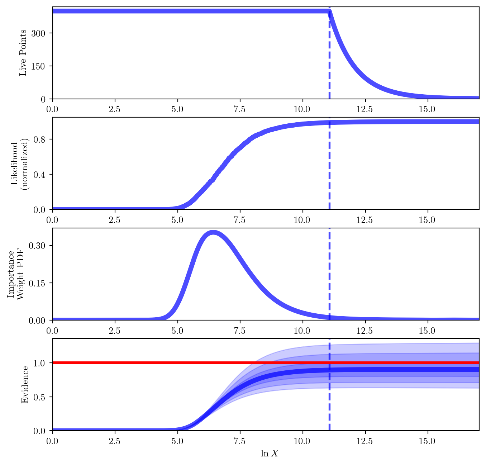
In Figure 2.16 we show a trace plot, which relates the evolution in prior compression to the actual values of the parameters. For each parameter, we get a scatter plot of its value as a function of the prior compression, and we can see its range shrink as we reach higher and higher values of the likelihood.
More specifically, this plot is showing the locations of the dead points, i.e. the lowest-likelihood points that get discarded at each iteration. When one of them gets replaced, it will be assigned a new likelihood in the range \([L_{i}, L_\text{max}]\), and after a certain number of iterations it will be replaced again. This is what the red lines are showing; they should be moving “randomly” across the parameter space, if we were to see them remain in a given region in the parameter space we would have an indication that our replacement algorithm is not performing properly.
The points are colored by their importance weights, \(w_{i}L_{i} / Z\), and to the right we see a density estimate plot for the posterior distribution of each parameter together with a 95% confidence interval.
fig, axes = dyplot.traceplot(
sampler.results,
truths=np.zeros(ndim),
truth_color='black',
show_titles=False,
trace_cmap='inferno',
connect=True,
connect_highlight=range(2)
)
fig.set_size_inches(6, 3.5)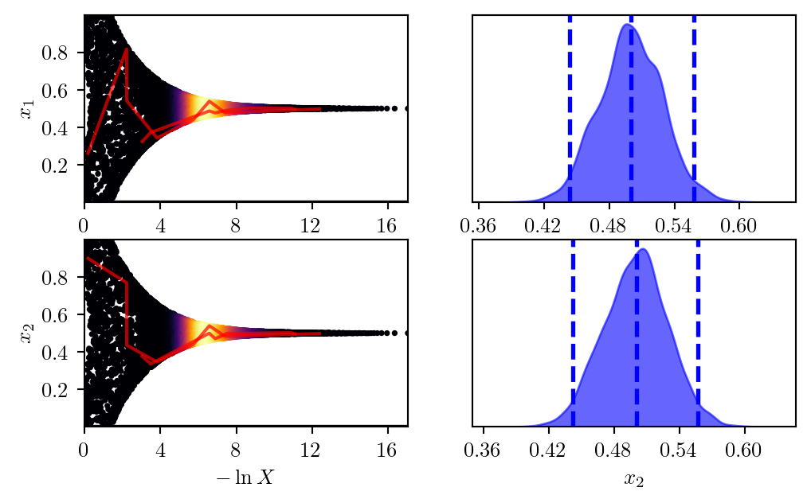
The corner plot (Figure 2.17) is a great tool to extract physical understanding about our model. It shows the marginal density plot for all our parameters, as well as for each pair of parameters.
fig, axs = dyplot.cornerplot(
sampler.results,
color='blue',
truths=np.zeros(ndim),
truth_color='black',
show_titles=True,
max_n_ticks=3,
quantiles=None,
)
fig.set_size_inches(5, 3)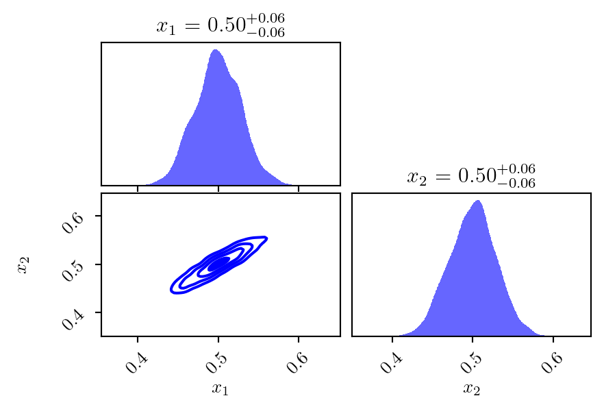
For this example the scenario introduced at the start of Section 2.2.5 is not adequate, so we will use the problem from Section 2.1.4.
A convenient visualization to gain insight into the question whether our model can reproduce the data is the posterior predictive distribution: the distribution expected of new data, conditional on our model and the data we observed.
\[ \begin{aligned} p(y_\text{pred} | y _\text{obs}, M) &= \int p(y_\text{pred}, \theta|y_\text{obs}, M)\text{d}\theta \\ &= \int p(y_\text{pred}|\theta, y_\text{obs}, M) p(\theta | y_\text{obs}, M)\text{d}\theta \\ &= \int \underbrace{p(y_\text{pred}|\theta, M)}_{\text{model}} \underbrace{ p(\theta | y_\text{obs}, M) }_{ \text{posterior} }\text{d}\theta \end{aligned} \]
We can show this in different ways; an easy one to implement is by drawing samples from the posterior and plotting the model realization corresponding to each of them. The ensemble of curves will follow the posterior predictive distribution, as shown in Figure 2.18.
from dynesty import DynamicNestedSampler
x_i = np.load(data_path / 'cache' / 'parabolic_data_x.npy')
y_i = np.load(data_path / 'cache' / 'parabolic_data_y.npy')
kwargs = {
'fmt': 'o',
'capsize': 5,
'alpha': .8,
}
sigma_y = 1
true_a = -0.1
true_b = 0.5
true_c = 3
n_points = len(x_i)
lnorm = -0.5 * (
np.log(2 * np.pi) * n_points +
np.log(sigma_y**2 * n_points))
def loglike(theta):
y = model(x_i, *theta)
return - 0.5 * ((y-y_i)**2).sum() / sigma_y**2 + lnorm
def loglike_linear(theta):
y = model(x_i, 0, *theta)
return - 0.5 * ((y-y_i)**2).sum() / sigma_y**2 + lnorm
def prior_transform(u):
# flat prior in [-10, 10] for all parameters
return u*20. - 10.
fname_parabola = data_path / 'cache' / 'parabolic_model.pkl'
if fname_parabola.exists():
sampler_parabola = DynamicNestedSampler.restore(str(fname_parabola))
else:
sampler_parabola = DynamicNestedSampler(loglike, prior_transform, 3, nlive=500)
sampler_parabola.run_nested(dlogz_init=0.01)
sampler_parabola.save(str(fname_parabola))
fname_linear = data_path / 'cache' / 'linear_model.pkl'
if fname_linear.exists():
sampler_linear = DynamicNestedSampler.restore(str(fname_linear))
else:
sampler_linear = DynamicNestedSampler(loglike_linear, prior_transform, 2, nlive=500)
sampler_linear.run_nested(dlogz_init=0.01)
sampler_linear.save(str(fname_linear))
def model(x, a, b, c):
return a*x**2 + b*x + c
plt.errorbar(x_i, y_i, 1, **kwargs, c='black')
plt.xlabel('$x$')
plt.ylabel('$y$')
cmap = plt.get_cmap('coolwarm')
for posterior_sample in sampler_parabola.results.samples_equal()[:100]:
plt.plot(x_i, model(x_i, *posterior_sample), c=cmap(0.), alpha=.1)
for posterior_sample in sampler_linear.results.samples_equal()[:100]:
plt.plot(x_i, model(x_i, 0, *posterior_sample), c=cmap(1.), alpha=.1)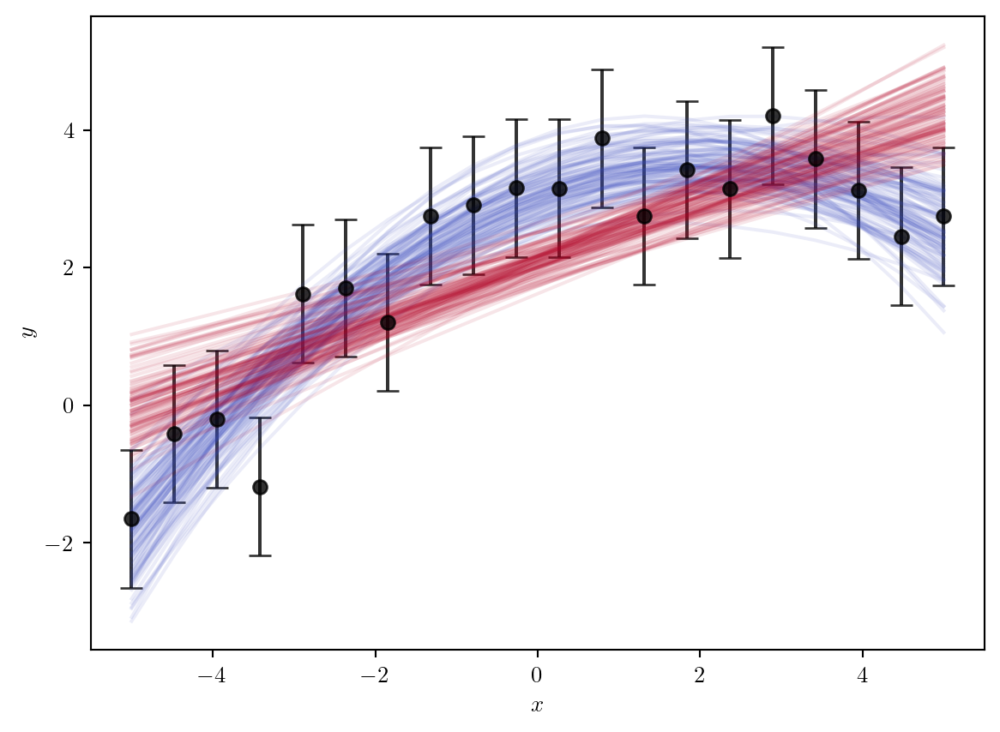
For an in-depth discussion of posterior predictive checks in the context of gravitational wave data analysis, see (Romero-Shaw, Thrane & Lasky 2022).
The typical set of the posterior is often “much smaller” than the prior. A useful way to quantify this is the relative entropy, or Kullback-Leibler divergence between posterior and prior, often also called information gain or \(H\):
\[ H = \text{KL}(p \parallel \pi) = \int p(\theta ) \log \left( \frac{ p( \theta )}{\pi (\theta )}\right) \text{d}\theta = \int p(X) \log p(X) \text{d}X\,. \]
The base of the logarithms defines the unit used for the information gain:
One way to interpret this is related to the signal-to-noise ratio (Sivia & Skilling 2006, eq. 9.15): \[ H \sim \text{\# active components in the data} \times \log\text{(signal-to-noise ratio)} \]
It can also be seen as a “volumetric compression” from the prior to the posterior. If the distributions are uniform, this intuition is exact (Petrosyan & Handley 2022): suppose we have \(\pi (\theta) \equiv [\theta \in V_{\pi}] / V_{\pi}\) and \(p(\theta) \equiv [\theta \in V_{p}] / V_{p}\), where the two volumes are such that \(V_{p} \subset V_{\pi}\).7 Then,
\[
\text{KL} (p \parallel \pi) = \int_{V_{\pi}} \frac{[\theta \in V_{p}]}{V_{p}} \log \frac{V_{\pi}}{V_{p}} \text{d}\theta = \log \frac{V_{\pi}}{V_{p}},
\]
7 The square brackets are the Iverson bracket, as defined by Knuth (1992).
The integral can be restricted to the \(V_{p}\) volume, since the integrand is zero outside it. Another useful special case to develop an intuition is the one in which our prior is a Gaussian distribution with standard deviation \(\sigma\), and our posterior is centered on the same value but its standard deviation is \(\sigma' = \sigma / k\). Then, the information gain is (Buchner 2022): \[ \text{KL}(\mathcal{N}(\mu, \sigma') \parallel \mathcal{N}(\mu, \sigma)) = \log k + \frac{1}{2} \left( \frac{1}{k^{2}} - 1 \right)\,. \]
We can compute the theoretical value for the entropy in the example above, since the computation is analytic in the Gaussian case: it is known that the differential entropy of a \(d\)-dimensional multivariate Gaussian random variable \(f \sim \mathcal{N}(\mu, C)\) is (Cover & Thomas 2006, theorem 8.4.1): \[ - \int_{\mathbb{R}^{d}} f(\theta) \log f(\theta) \ \text{d}^{d}\theta = \frac{d}{2}\log(2 \pi e) + \log \det C \,. \]
The integral we need to compute \(H\) is very similar. The sign is opposite, and instead of being over \(\mathbb{R}^{2}\) it is only over \([0, 1]^{2}\). The region outside of this box is, however, more than \(10\sigma\) from the mean, therefore its contribution is negligible.
from IPython.display import Markdown
Markdown(
'Comparing the analytical result with an estimate computed during the run by the sampler, we see that '
f'they are quite similar: the value of $H$ obtained during sampling is {sampler.results.information[-1]:.2f}, while the '
f'analytical estimate is {-ndim/2 * (1+np.log(2 * np.pi)) - .5 * np.log(np.linalg.det(C)):.2f}.')Comparing the analytical result with an estimate computed during the run by the sampler, we see that they are quite similar: the value of \(H\) obtained during sampling is 5.45, while the analytical estimate is 5.34.
The nested sampling algorithm we described above could continue forever, with ever-smaller compression \(\log X\). However, if the likelihood function is bounded, after a certain number of iterations the prior volume will be concentrated around its maximum value, with all the live points having similar likelihood values, as Figure 2.19 shows.
from thesis_scripts import plt
fig, axs = plt.subplots(nrows=2, ncols=1, sharex=True, gridspec_kw={'hspace': 0 }, figsize=(6, 3))
axs[1].plot(sampler.results.logvol, sampler.results.logl)
axs[1].set_ylim(-10, sampler.results.logl[-1]+2)
axs[1].set_xlabel('Prior volume compression $\log X$')
axs[1].set_ylabel('$\log \mathcal{L}$')
axs[1].set_xlim(*reversed(axs[1].get_xlim()))
axs[0].plot(sampler.results.logvol, sampler.results.logz)
axs[0].set_ylim(-10, np.max(sampler.results.logz)+2)
axs[0].set_ylabel('$\log \mathcal{Z}$')
for ax in axs:
x0, x1 = -10, ax.get_xlim()[1]
y0, y1 = ax.get_ylim()
ax.fill(
(x0, x0, x1, x1),
(y0, y1, y1, y0),
c='grey',
alpha=.1
)
axs[0].arrow(-10, -2.5, -3, 0, width=.1, color='black')
_ = axs[0].text(-10.5, -6, 'Little contribution\nto the integral')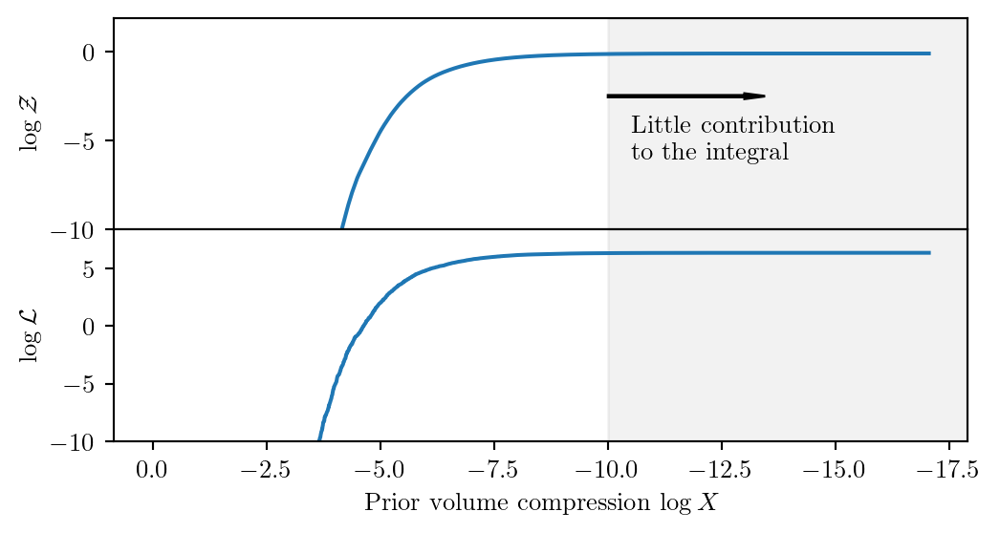
Thus, we can find a termination condition by diagnosing whether this is happening: for example, we can compute the contribution to the evidence integral from the current live points, and stop iterating when that becomes smaller than a given threshold — this is the default in dynesty (Speagle 2020).
Since this is a stochastic algorithm, there is always a chance we are making a mistake when terminating: for example, there could be a region with very low volume but high likelihood that none of the live points have happened upon, but which could give a significant contribution to the evidence. There is no general solution to this issue, besides increasing the number of live points in order to improve the chances that some of them will happen upon the high-likelihood region.
The information gain provides an estimate of the expected volumetric compression: we expect to be sampling from the bulk of the posterior mass when \(\log X \sim -H\), which will take approximately \(n_\text{live}H \pm \sqrt{ n_\text{live}H }\) iterations due to Poisson variability.
If \(n_\text{live}H\) is large, we expect the dominant source of uncertainty to be the one on the compression reached at that stage — it will be much larger than the uncertainty on the compression in the \(\mathcal{O}(\sqrt{ n_\text{live}H })\) iterations required to traverse the posterior mass. This leads us to the estimate \[ \mathtt{std}(\log Z) \approx \sqrt{ \frac{H}{n_\text{live}} } \,. \]
So, for a fixed variance on the evidence, we need to have \(n_\text{live} \propto H\); therefore, the number of iterations is approximately \(n_\text{iter} \propto n_\text{live}H \propto H^{2}\).
The time complexity for nested sampling can then be estimated as
\[ T \approx n_{\text{live}} \times \langle t_{\text{like}} \rangle \times \langle n_{\text{replace}}\rangle \times H \]
where
This equation assumes that likelihood evaluation is the primary computational requirement; this may not always be the case, especially for sophisticated proposal methods such as machine-learning based ones (Williams, Veitch & Messenger 2021).
Based on this equation, we can think of several ways to accelerate sampling; Roulet & Venumadhav (2024) have reviewed many of them in the context of gravitational wave parameter estimation.
The minimum number of live points required for unbiased inference is generally fixed by the problem, though as we discuss in Section 2.2.7.1 it may be varied during the run to gain in performance.
A large gain can be often obtained by improving the replacement efficiency of the method used — see also Section 2.2.3. Accelerating the evaluation of the likelihood, \(\langle t_\text{like} \rangle\), will also result in a direct reduction of computational time. In Section 3.4 we discuss some approaches in this direction.
The original nested sampling algorithm evolves a fixed number of live points throughout the run. It has since been proposed that it can be more efficient to vary it (Higson et al. (2019), Speagle (2020)), depending on the quantity we are more interested in evaluating.
A nested sampling run gives us estimates for both the evidence and the posterior. If what we are most interested in is precisely computing the evidence, we should allocate more points in the early stages of compression, even though the posterior mass is very low there: this will give us better statistics on the active volume when we reach the posterior bulk.
If we are more interested in the posterior, on the other hand, we can do the initial compression with fewer points and use more once we reach the posterior bulk.
It turns out that, while both these objectives can be optimized independently, the standard choice of using a constant number of live points is not on the Pareto front8 for the uncertainties on evidence and posterior: a balanced dynamical allocation of points can improve both compared to the constant case (Higson et al. 2019).
8 The Pareto front (introduced by Pareto (1919) with the Italian name serie di indifferenza, “indifference series”) is a concept from multi-objective optimization. Defining multiple cost functions across a parameter space \(X\) establishes a partial order relation between points in \(X\): if a point \(x \in X\) has a lower cost than \(y \in X\) for all cost functions, then we say that it strictly dominates \(y\), or \(x \succ y\). This is a partial ordering, since there are pairs \((x, y)\) for which we have neither \(x \succ\) y nor \(y \succ x\). The Pareto front is then the set of points which are not dominated by any others.
Simulation-based inference (SBI) encompasses a broad range of approaches to inference which do not require an explicit, analytic likelihood. While they still strive to produce results according to Bayes’ theorem (Equation 2.1), they learn the likelihood implicitly, through the process of training a machine learning model. All SBI approaches require the presence of a simulator, i.e. a way to simulate data \(d\) conditional on a set of parameters \(\theta\), distributed according to the likelihood: \(d \sim p(d|\theta)\). This need not be based on an analytic likelihood: for instance, in the gravitational wave case, one may inject signals into realistic detector noise (Dax et al. 2021, Emma & Ashton 2026).
Several SBI methods exist, the main ones being (Liang & Wang 2025):
Other approaches include Flow Matching Posterior Estimation and Consistency Model Posterior Estimation. The appeal of NPE specifically is in its promise to remove the stochastic sampling step, i.e. the requirement to use MCMC, nested sampling or other methods, thus providing an extreme gain in speed.
Modelling generic probability distributions is a task with wide applicability in gravitational wave science and beyond. A normalizing flow (Papamakarios et al. 2021) is a series of parameterized transformations, whose joint action is denoted as \(T\), which map a base distribution onto a generic other distribution. The base distribution should be easy to sample from: it is often chosen to be the standard \(n\)-dimensional Gaussian, with zero mean and the identity matrix as covariance. The transformations \(T\) are chosen to be invertible, and both \(T\) and \(T^{-1}\) to be differentiable. Let us denote the variable in the “simple” space as \(u\), and its transformed value in the parameter space as \(\theta = T(u)\). If the density function for the simple distribution is labelled \(p_{u}(u)\), its transformed version will be \[ q_{\theta}(\theta) = p_{u}\left(T^{-1}(x)\right) \lvert \det J_{T^{-1}}(x) \rvert \,. \]
Transformations in this class can be composed, and the determinant of the composition can be readily computed as the product of the individual determinants. This fact enables the flow-based architecture, in which several simple transformations are composed to achieve significant distortions of the base space. In fact, it can be shown under some weak assumptions that any distribution can be modeled in this manner.
If we have samples from a target distribution \(p(\theta)\), we seek to train a normalizing flow \(q_{\theta}(\theta; \lambda)\), where \(\lambda\) are the parameters defining the transform \(T\). We can do so with the following loss function (Papamakarios et al. 2021, equation 13): \[ \begin{aligned} \text{loss}(\lambda) &= D_{\text{KL}} (p(\theta) \lvert \rvert q_{\theta}(\theta ; \lambda)) \\ &= \mathbb{E}_{\theta \sim p(\theta)} [- \log p_{\theta}(\theta; \lambda) ] + \text{const.} \end{aligned} \tag{2.10}\]
A significant advantage of the normalizing flow architecture is that it enables evaluation of the density function \(q_{\theta}(\theta)\) as well as the possibility to generate samples from it.
The objective of neural posterior estimation is to be able to directly model the posterior distribution based on an observation \(d\). This is achieved through a network architecture dubbed a neural density estimator \(q(\theta|d)\), which defines a normalized density function on the parameters \(\theta\) conditioned on the data \(d\). This is often a normalizing flow: see Section 2.3.1.
The loss function for this, in the simplest case, is (Dax et al. 2023, Papamakarios & Murray 2016): \[ \text{loss}_{\text{NPE}} = \mathbb{E}_{\theta \sim \pi(\theta)} \mathbb{E}_{d \sim p(d|\theta)} [-\log q(\theta|d)]\,. \tag{2.11}\]
This is equivalent, up to an additive constant, to the expectation value of the KL divergence between the posterior \(p(\theta | d)\) and the estimator, \(\mathbb{E}_{d \sim \mathcal{Z}(d)} D_{\text{KL}}(p(\theta | d) \lvert \rvert q(\theta |d))\): in order to get Equation 2.11 from this expression, we need to apply Bayes’ theorem (Equation 2.1).
The expectation values can be numerically approximated by repeatedly sampling the parameters \(\theta\) from their prior distribution \(\pi(\theta)\), and then computing a set of data \(d\) by fixing the parameters and simulating a noise realization through the likelihood \(p(d|\theta)\).
In practice, directly employing the loss in Equation 2.11 is impractical. Some parameters, such as the sky position of the signal, significantly alter the observed waveform in each detector by shifting it in time; This dependence, however, is known and can be amortized during training (Dax et al. 2023), leading to significantly improved performance. Additionally, the detector’s power spectral density \(S_{n}\) is varied during training, so that conditioning can be performed at inference time (Wildberger et al. 2023). With this approach, the actual loss function for the state-of-the art NPE model DINGO (“Deep Inference for Gravitational-wave Observations”) (Dax et al. 2021, equation 3) is \[
\text{loss}_{\text{GNPE}} =
\mathbb{E}_{\theta \sim \pi(\theta)}
\mathbb{E}_{S_{n} \sim p(S_{n})}
\mathbb{E}_{d \sim p(d|\theta)}
\mathbb{E}_{ \delta t_{I} \sim \kappa (\delta t_{I})}
[-\log q(\theta|d_{-t_{I}(\theta)-\delta t_{I}}, S_{n}, t_{I}(\theta) + \delta t_{I})]\,.
\tag{2.12}\]
Here, \(t_{I}(\theta)\) is the arrival time of the gravitational wave signal at a given detector, and \(\kappa\) is a kernel used to perturb it. The subscript notation \(d_{-t_{I}(\theta)-\delta t_{I}}\) denotes time-shifted data. This procedure makes it so that, in all the training data available to the model, waveforms are all approximately time-aligned.
Recently, a new transformer-based architecture for DINGO has been proposed (Kofler et al. 2025) as an alternative to the GNPE approach described above. By tokenizing the data across detectors and frequency grid sections, a single network can be used for different detector configurations (one, two or three detectors), as well as for different frequency intervals.
Taken alone, neural posterior estimation often yields fairly accurate estimates of the posterior distribution, but it does not do so in every case, and we have no guarantee that it did so for any specific signal of interest.
This is the motivation behind the introduction of neural importance sampling (Dax et al. 2022), which allows us to re-weight the posterior samples, estimate the evidence and correct the posterior distribution.
Importance sampling is a common integration technique, based on the fundamental approximate equality \[ \int f(x) g(x) \text{d}x \approx \sum_{x_{i} \sim g(x)} f(x_{i})\,, \] where \(x\) is a variable in \(\mathbb{R}^{n}\), \(g(x)\) is a probability distribution on it, while \(f(x)\) is an arbitrary function of \(x\). Reframing this equality, if we want to compute an integral in the form \(\int f(x)\text{d}x\), we can do so by identifying an auxiliary density \(g\), and then evaluating \[ \int f(x) \text{d}x = \int \frac{f(x)}{g(x)} g(x) \text{d}x \approx \sum_{x_{i}\sim g(x)} \frac{f(x_{i})}{g(x_{i})}\,. \tag{2.13}\] The quality of this as an integration technique varies depending on the quality of the proposal \(g\). In fact, it can be shown that the estimator’s variance is related to the variance of \(f(x_{i}) / g(x_{i})\) (Augustine Kong 1992): the closer the proposal \(g\) approximates the integrand \(f\) (up to a constant multiplicative factor), the better.
This approach is applicable to gravitational wave inference if we are using NPE: we have direct access to the integrand function, \(f=\mathcal{L}(d|\theta_i) \pi(\theta_{i})\), and neural posterior estimation provides us with an estimate \(q(\theta|d)\) of the posterior density, which we may use as in place of the proposal \(g\), since its density is also available.
The procedure is then as follows: we extract \(n\) samples \(\theta_{i} \sim q(\theta|d)\), and assign them weights
\[w_{i} = \frac{\mathcal{L}(d|\theta_i) \pi(\theta_{i})}{q(\theta_{i}|d)}\,. \tag{2.14}\]
By Equation 2.13, then, the average of these weights will be an estimator for the evidence: \[ Z(d) \approx \frac{1}{n} \sum_{i=1}^{n} w_{i}\,. \] While this is an unbiased estimator, its variance may be high if the proposal distribution is not close enough to the function we are integrating. Let us define the number of effective samples (Augustine Kong 1992):
\[ n_\text{eff} = \frac{\left( \sum_{i}w_{i} \right)^{2}}{\sum_{i}w_{i}^{2}}\,, \tag{2.15}\]
and the sample efficiency \(\epsilon =n_\text{eff} / n\).
The optimal situation is when the proposal distribution \(q\) perfectly matches the posterior \(p(\theta|d)\): in that case, all the weights will be identical and equal to \(Z\). Then, the effective sample size will be \(n _\text{eff} = (nZ)^{2} / (n Z^{2}) = n\), and the efficiency \(\epsilon\) will equal 1.
If the proposal poorly models the posterior, we have no strict mathematical guarantees on what the efficiency will be. In principle, depending on the likelihood’s shape, it is possible for the weights to be roughly constant, despite none of the samples lying in the posterior’s typical region.
In practice, though, gravitational wave likelihoods exhibit extreme variations far from their typical regions. The log-likelihood ratio in Equation 3.4 will range at the very least from \(-\rho^{2} /2\) to \(\rho^{2} / 2\); even for low-SNR detections with \(\rho \approx 10\), this is a variation of 100 in the logarithm of the likelihood. We observe that, when the proposal poorly models the posterior distribution, one weight tends to completely dominate the sum, so that (for instance) \(w_{1} \gg w_{i}\) for any \(i \neq 1\). If this is the case, we get \(n _\text{eff} \approx w_{1}^{2} / w_{1}^{2} = 1\) and \(\epsilon = 1 / n\).
In (Santoliquido et al. 2025a), one can see a scenario analogous to this occur: there, the number of samples drawn is \(n=10^{5}\); while for most sources the sample efficiency is high, for a few we can see very low values, with some reaching the lower bound of \(10^{-5}\), which corresponds to an effective sample size of approximately 1.
The evidence estimate can be associated with an approximate error (Dax et al. 2022) \[ \sigma_{Z} \approx Z \sqrt{ \frac{1-\epsilon}{n \epsilon} } \]
or equivalently
\[ \sigma_{\log Z} \approx \sqrt{ \frac{1-\epsilon}{n\epsilon} }\,. \]
We will take the unnormalized posterior to be
\[ \mathcal{L}(\theta|d)\pi(\theta) = 100 \mathcal{N}(\theta, \mu=0, \sigma=1) \] while the proposal distribution will be slightly offset from it:
\[ q(\theta|d) = \mathcal{N}(\theta|\mu=\mu_0, \sigma=1)\,. \]
In order to illustrate the impact of effective sample size, we choose two different values for the offset: 2.5 and 0.3. In Figure 2.20 we can see the impact of effective sample size on the evidence estimate.
Besides the decreasing accuracy in evidence estimation, a low efficiency (low effective sample size) also leads to inaccurate estimates on the error of the estimate itself. Visually, this is not surprising: with the higher value of the offset, the left side of the posterior is completely unexplored.
from thesis_scripts import *
from scipy.stats import norm
from thesis_scripts import plt
import numpy as np
proposal_locs = [2.5, 0.3]
fig, axs = plt.subplots(2, 1, sharex=True, figsize=(6, 4))
for loc, ax in zip(proposal_locs, axs):
post = norm(loc=0, scale=1)
proposal = norm(loc=loc, scale=1)
theta = np.linspace(-4, 7, num=200)
n = 1_000
samples = proposal.rvs(size=n, random_state=2)
weights = 100 * post.pdf(samples) / proposal.pdf(samples)
neff = np.sum(weights)**2 / np.sum(weights**2)
evidence_estimate = np.average(weights)
evidence_error = evidence_estimate * np.sqrt((1 -neff/n) / neff)
ax.plot(theta, post.pdf(theta), label='Normalized posterior')
ax.plot(theta, proposal.pdf(theta), label='Proposal')
for sample, norm_weight in zip(samples, weights / np.max(weights)):
if np.isclose(norm_weight, 1):
label='Samples by importance weight'
else:
label=''
ax.axvline(x=sample, ymax=.1, alpha=norm_weight**2, c='black', label=label)
ax.set_title(f'$n_{{\\mathrm{{eff}}}}=${neff:.0f}, $n=${n}, $Z$ estimate={evidence_estimate:.1f}$\pm${evidence_error:.1f}')
if loc < 1:
ax.legend()
ax.set_ylim(0, .5)
plt.show()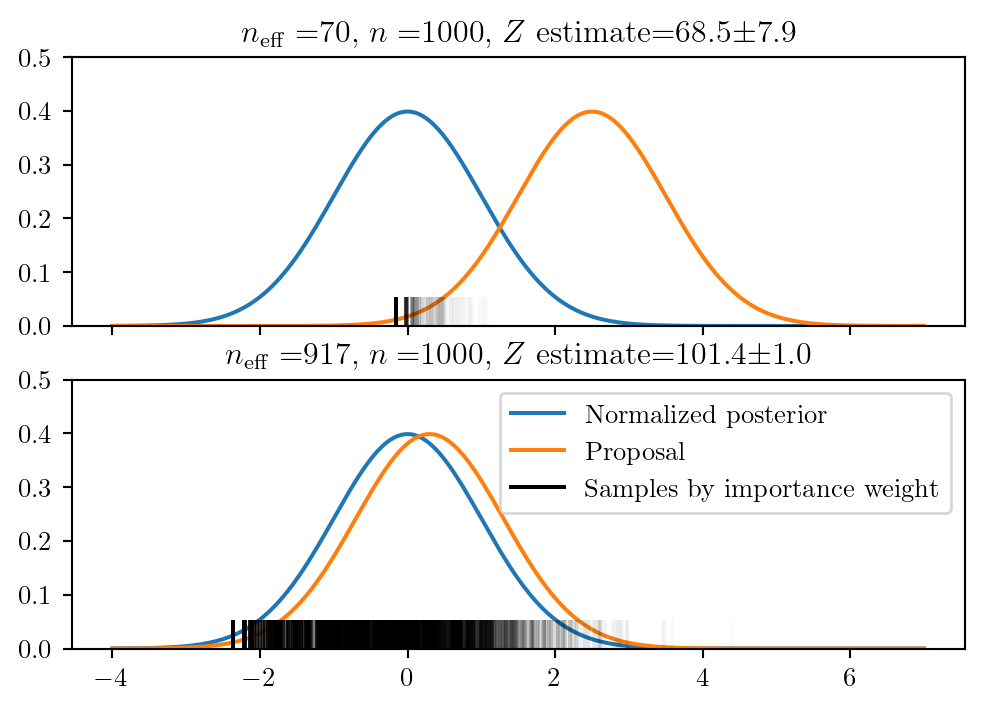
Dax et al. (2022) introduced the usage of importance sampling to complement neural posterior estimation, with a piece of software called DINGO-IS. The density estimate given by DINGO for the posterior is corrected through importance sampling, based on the standard gravitational wave likelihood.
Besides giving an estimate for the evidence, this allows us to correct the posterior samples. We can extract \(n\) samples \(\theta_{i}\) from the NPE distribution \(q(\theta|d)\), compute their weights according to Equation 2.14, and then interpret \(\theta_{i}\) as weighted samples from the posterior distribution \(p(\theta|d)\), and use them as described in Section 2.1.1.2.
This approach effectively makes the DINGO-IS analysis results equivalent to those obtained by stochastically sampling the likelihood. While bringing a significant advantage in terms of robustness and trustworthiness, this approach — if applied with a Gaussian likelihood — negates any benefits that could be gained from training the neural network on anything other than Gaussian noise.
Analyzing a signal with DINGO-IS can be both significantly faster and significantly slower than performing the same analysis with stochastic methods such as nested sampling: when the sample efficiency is low, the number of samples required for unbiased inference can quickly become impractical.
The Fisher matrix is a common tool in gravitational wave data analysis and forecasting. It is defined as the noise-averaged Hessian of the log-likelihood: \[ F_{ij} = \langle \partial_{i} \partial_{j} \log \mathcal{L}(d|\theta) \rangle _\text{noise}\,. \]
If the likelihood is written in the Whittle form (see Section 3.2), then this is equal to \[ F_{ij} = \left( \frac{\partial h}{\partial \theta_{i}} \bigg| \frac{\partial h}{\partial \theta_{j}} \right) \,. \]
For a derivation, see Finn (1992) or Vallisneri (2008). This matrix can be interpreted in different ways (Vallisneri 2008): (i) in terms of the frequentist Cramér-Rao bound on the error covariance of an unbiased estimator for the true source parameters, (ii) as the error covariance of the frequentist maximum-likelihood estimator, or (iii) as an estimate of the error covariance of the Bayesian posterior distribution under the assumption that the priors are constant over the range of interest; here we shall focus on option (iii) for consistency with the Bayesian approach in the rest of this work.
We can approximate the likelihood in the linearized signal approximation (LSA), a Taylor series for the signal around the true value of the parameters \(\theta_{0}\) in terms of the deviation \(\delta\theta = \theta-\theta_{0}\): \[ h(\theta) = h(\theta_{0}) + \delta\theta_{i} \frac{\partial h}{\partial \theta_{i}} + \mathcal{O}((\delta\theta)^{2})\,. \]
In this approximation, the Whittle likelihood is written as \[ \log\mathcal{L}(d | \theta) = -\frac{1}{2} (n|n) + \delta\theta_{i} \left( n\bigg| \frac{\partial h}{\partial \theta_{i}} \right) - \frac{1}{2} \delta \theta^i \delta \theta^j \mathcal{F}_{ij} + \mathcal{O}((\delta\theta)^{3}) \,. \tag{2.16}\] This is the expression of a multivariate normal distribution, with covariance matrix \(\mathcal{C}_{ij} = \mathcal{F}_{ij}^{-1}\).
This expression is written as an expansion in orders of the deviation of the parameters, but the actual requirement for the Fisher approximation is a high value of the (optimal) SNR, which we shall define in Section 3.3, \(\rho = \sqrt{ (h_{0}|h_{0}) }\). In this approach, and based on the LSA approximation to the likelihood, we can compute the first and second moment of the posterior distribution \(p(\theta|d) \propto \mathcal{L}(d|\theta) \pi(\theta)\) as a series expansion in orders of \(1 / \rho\). This is only analytically tractable if the prior distribution \(\pi(\theta)\) is constant over the range of interest, or Gaussian and centered around the same point as the posterior.
The expectation value of the noise covariance is then \[ \langle \delta\theta_{i} \delta\theta_{j} \rangle _{p(\theta|d)} = F_{ij}^{-1} + \mathcal{O}\left( \frac{1}{\rho^{3}} \right)\,; \] with the addition of a Gaussian prior \(\pi(\delta\theta) \propto \exp\left( - \frac{1}{2} P_{ij} \delta\theta_{i} \delta\theta_{j} \right)\) it becomes (Vallisneri 2008, eq. 39): \[ \langle \delta\theta_{i} \delta\theta_{j} \rangle _{p(\theta|d)} = \left( F_{ij} + P_{ij} \right)^{-1} + \mathcal{O}\left( \frac{1}{\rho^{3}} \right)\,. \]
The Fisher matrix can be complemented by the addition of information from a generic prior distribution by performing rejection sampling on samples extracted from the Gaussian distribution it defines (Dupletsa et al. 2025, Iacovelli et al. 2022a).
Several studies (Dupletsa et al. 2025, Rodriguez et al. 2013, Santoliquido et al. 2025b, Vallisneri 2008), some of which include prior distributions through rejection sampling, have found that the covariance matrix estimated by inverting the Fisher matrix does not reliably represent the posterior covariance matrix obtained through the sampling techniques described in this chapter.
Nevertheless, the Fisher matrix can be a useful tool, especially in the context of forecasting, due to the relative ease of its computation compared to full parameter estimation. It provides a metric on the parameter space, which can be useful when generating template banks, see e.g. Phukon, Schmidt & Pratten (2025). In some cases it can be computed analytically, which is useful for the theoretical understanding of the behavior of data analysis pipelines, see Section 2.4.1.
Fisher integrands are also a useful tool for the understanding of parameter constraints: a quantity in the form \[ \frac{4f}{S_{n}(f)} \bigg| \frac{ \partial h }{ \partial \theta_{i} } \bigg|^{2} \] can be integrated in \(\text{d}\log f\) to yield the \(i\)-th entry in the diagonal of the Fisher matrix, whose inverse contributes to the computation of the variance of the \(i\)-th parameter. It is incomplete information, since it does not account for correlations with other parameters; still, it can provide some qualitative understanding and diagnostics. We used this tool to describe the way information on the sky position of the source accumulates as a function of time with the Lunar Gravitational Wave Antenna (Cozzumbo et al. 2024).
In practice, the computation of Fisher matrices requires differentiation of the projected waveform onto a detector. This can be accomplished numerically, but it is generally convenient to analytically compute all derivatives where it is possible (Dupletsa et al. 2023). For example, the derivative with respect to distance is simply \[
\frac{ \partial h }{ \partial d_{L} } = - \frac{h}{d_{L}}\,,
\] since \(h \propto 1 / d_{L}\). If the waveforms and projection allow it, even more of the derivatives can be computed analytically, with the help of automatic differentiation such as that enabled by jax (Iacovelli et al. 2022a,b).
We can obtain a Fisher estimate for the timing uncertainty of a gravitational wave observation by computing the Shur’s complement of the Fisher matrix for time and phase (Grover et al. 2014, Singer & Price 2016).
The result is expressed in terms of the frequency moments of the signal:9 \[ \langle f^{k} \rangle = \frac{1}{\rho^{2}} (f^{k} h|h)\,. \] With these, we can define the frequency bandwidth \[ \sigma_{f}^{2} = \langle f^{2} \rangle -\langle f \rangle ^{2} \] and from it the timing uncertainty \[ \sigma_{t} = \frac{1}{2\pi\rho\sigma_{f}}\,. \]
9 In some references (Essick, Vitale & Evans 2017, Fairhurst 2009) this expression is incorrectly reported as \(\langle f^{k} \rangle=(f^{k}h|h)\) (or equivalently in each paper’s notation). Without the normalization factor \(\rho^{2}\), the two terms in the frequency bandwidth expression scale with \(\rho^{2}\) and \(\rho^{4}\) respectively, meaning that for high enough SNR the variance becomes negative.
Localizing gravitational wave sources is crucial, and it is quite useful to analytically understand which effects drive it in order to inform detector design. Wen & Chen (2010) computed a general Fisher expression for the angular area of a source observed by a network of detectors.
This area is a solid angle defined as \[ \Delta \Omega_{1\sigma} = 2 \pi \sqrt{ \langle \delta n_{x}^{2} \rangle \langle \delta n_{y} ^{2} \rangle - \langle \delta n_{x} \delta n_{y} \rangle ^{2} } = 2 \pi \sqrt{ \det C_{\text{sky}} } \,, \] where \(C_\text{sky}\) is the two-dimensional covariance matrix for the two components of the sky position position vector, \(n_{x}\) and \(n_{y}\), which are orthogonal to its true value \(n_{z}\). In a spherical coordinate system with right ascension \(\alpha\) and declination \(\delta\) we need to add a factor \(|\cos \delta|\) to get the correct area element (Iacovelli et al. 2022a). This area is defined such that the the probability contained within a similarly shaped contour of area \(\Delta\Omega\) around the center is \(P(\Delta\Omega) = \exp(-\Delta \Omega / \Delta\Omega_{1\sigma})\), therefore the equivalent area at the \(X\) credible level is \[ \Delta\Omega_{X} = \Delta\Omega_{1\sigma} \log(1-X)\,. \]
The Fisher expression for the \(1\sigma\) area reads (Chu, Wen & Blair 2012): \[ \Delta \Omega_{1\sigma} = \frac{4 \sqrt{ 2 } \pi c^{2}}{\sqrt{ \sum_{JKLM} \Delta_{JK}\Delta_{LM} |(\mathbf{r}_{KJ} \times \mathbf{r}_{ML}) \cdot \mathbf{n} |^{2} }}\,, \] where the indices \(JKLM\) span the available detectors, \(\Omega\) is the angular frequency, whereas \[ \Delta_{IJ} = \langle \Omega d_{I} | \Omega d_{J} \rangle \delta_{IJ} - \langle \Omega d_{I}| \partial_{k} d_{J} \rangle \langle \partial_{l} d_{J} | \Omega d_{J}\rangle F_{kl}^{-1} \] where \(F_{kl}\) is the Fisher matrix on all the parameters describing the signal except for sky position.
The term \(|(\mathbf{r}_{KJ} \times \mathbf{r}_{ML}) \cdot \mathbf{n} |\) is twice the area formed by the projections of the detectors \(J\), \(K\), \(L\), \(M\) onto the plane orthogonal to the wave propagation direction.
This expression is quite unwieldy in the general case; however, it can be simplified significantly for signals whose intrinsic parameters are assumed to be known.
For a two-detector network observing a monochromatic wave of (known) frequency \(f_{0}\), we get \[ \Delta\Omega_{\text{2 det}} = \frac{1}{\rho_{N}} \frac{c}{\pi f_{0} D_{\perp}} \sqrt{ \frac{\rho_{N}^{4}}{\rho_{1}^{2} \rho_{2}^{2}} }\,, \] while for three detectors we get \[ \Delta\Omega_{\text{3 det}} = \frac{1}{\rho_{N}^{2}} \frac{c^{2}}{4 \pi f_{0}^{2} A_{\perp}} \sqrt{ \frac{\rho_{N}^{6}}{\rho_{1}^{2} \rho_{2}^{2}\rho_{3}^{2}} }\,. \]
Here, \(\rho_{N} = \sqrt{ \sum_{i} \rho_{i}^{2} }\) is the network SNR, the sum in quadrature of the individual SNRs (see Section 3.3); the quantities \(D_{\perp}\) and \(A_{\perp}\) are respectively the distance between detectors or their area, projected onto a plane orthogonal to the propagation direction \(n\).
An expression can also be computed in the case of a long observation by a single detector, since its orbit around the Sun will effectively make it akin to a large network of detectors. Wen & Chen (2010) give this expression only in the limit of a short observation or one that is longer than a year; the expression for an arbitrary-length observation of a monochromatic signal with frequency \(f_{0}\) reads (Tissino et al. 2026) \[ \Delta\Omega = \frac{c^{2}}{f_{0}^{2} \rho^{2} A_{s}}\,, \tag{2.17}\] where \(A_{s}\) is the area of the projected detector’s motion onto a plane perpendicular to the source direction.
Specifically, it is defined as
\[ A_s = 2 \pi \sqrt{\text{var}(r_\theta) \text{var}(r_\phi) - \text{cov}^2(r_\theta, r_\phi)}\,, \tag{2.18}\]
where the coordinates \(r_\theta\) and \(r_\phi\) parameterize the projected motion of the detector in the aforementioned plane. When computing these variances and covariances, the trajectory should be weighted according to the accumulation of SNR, with an expression in the form
\[ w(t) = \left|\frac{\mathrm{d} f}{\mathrm{d}t}\right| \frac{\left|h(f)\right|^2 }{S_n(f)} \,. \]
This is a consequence of equation 45 in the paper by Wen & Chen (2010), under the assumption of a monochromatic signal.
The Fisher matrix can aid in understanding the correlation structure of the posterior distribution.
For example, Singer & Price (2016) used it to come to the conclusion that the extrinsic parameters of a gravitational wave source are overall uncorrelated from the intrinsic ones (for definitions see Chapter 5 and Chapter 6). This is qualitatively due to the fact that the extrinsic parameters are generally measured by inter-detector amplitude and time of arrival differences, while intrinsic parameters are generally measured by averages of amplitude and phase across detectors.
We can validate this by computing the Pearson correlation matrix of a full parameter estimation run: \[ \rho_{ij} = \frac{C_{ij}}{\sigma_i \sigma_j} \,, \] where \(C_{ij}\) is the empirical covariance matrix computed from the posterior samples, while \(\sigma_i = \sqrt{C_{ii}}\) is the standard deviation of parameter \(i\).
Each entry \(\rho_{ij}\) will lie between -1 and 1, with values near these extremes representing near-perfect (anti)correlation, while values near 0 represent uncorrelated variables. This only captures linear correlations, so it does not tell the whole story, but it is still quite useful.
# we start from the covariance matrix for an analysis of GW170817
# this is included in the auxiliary data for convenience
import numpy as np
from thesis_scripts.correlation_checkerboard import plot_correlations
from thesis_scripts import data_path
symbols = [
'$\\mathcal{M}$',
'$q$',
'$\\chi_1$',
'$\\chi_2$',
'$\\Lambda_1$',
'$\\Lambda_2$',
'$d_L$',
'$\\cos \\iota$',
'ra',
'dec',
'$\psi$',
'$c_{AL1}$',
'$c_{\phi L1}$',
]
cov = np.loadtxt(data_path / 'covariance_170817.txt')
plot_correlations(cov, symbols)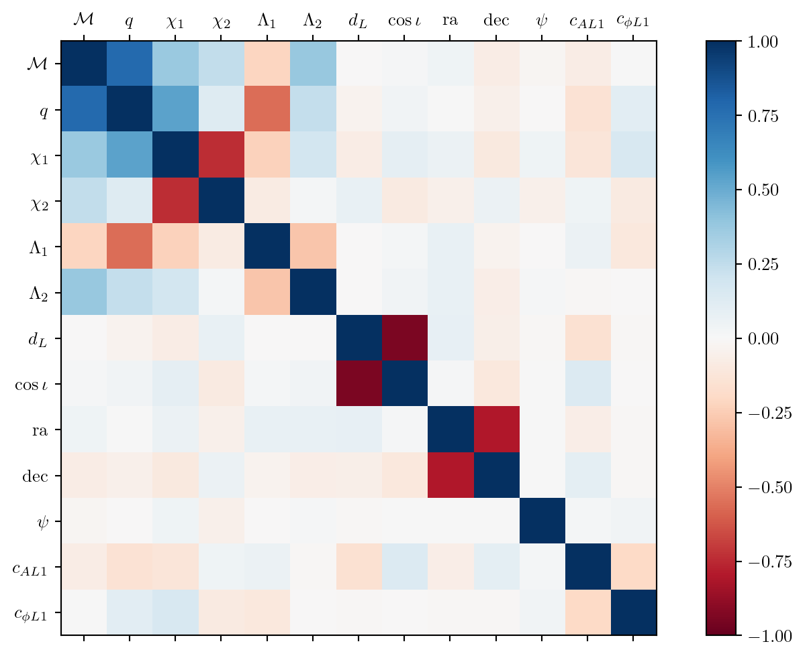
In Figure 2.21 we see the structure of the correlation matrix for an actual analysis of the neutron star binary GW170817 (specifically, the one from Tissino et al. (2023)).